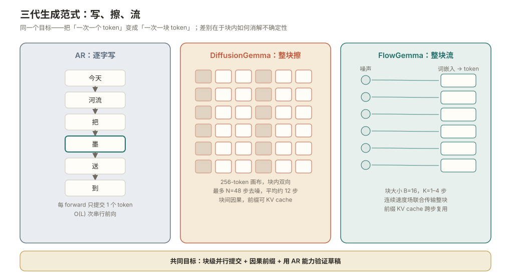
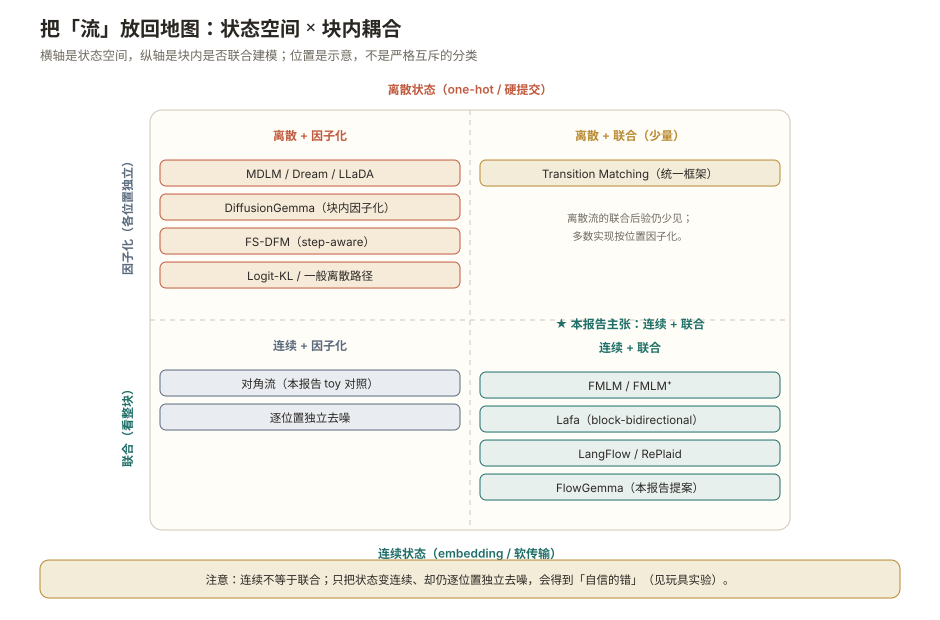
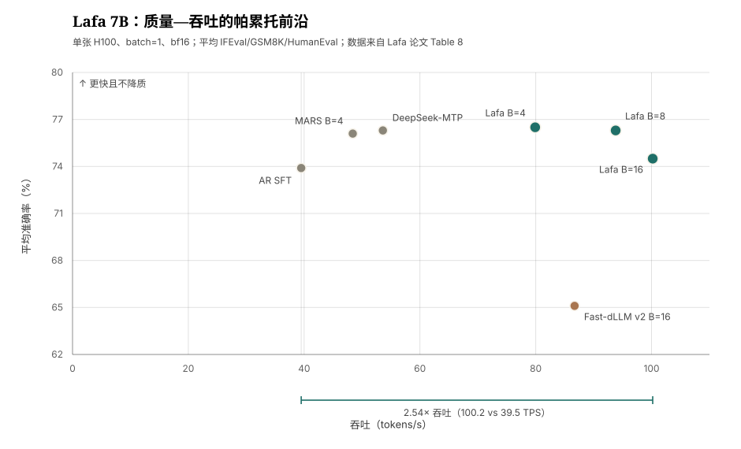
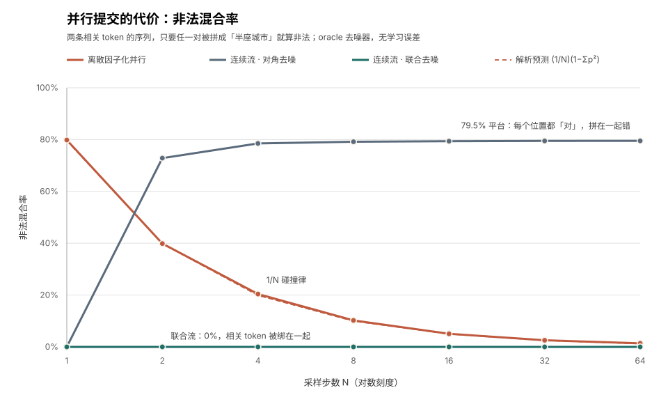
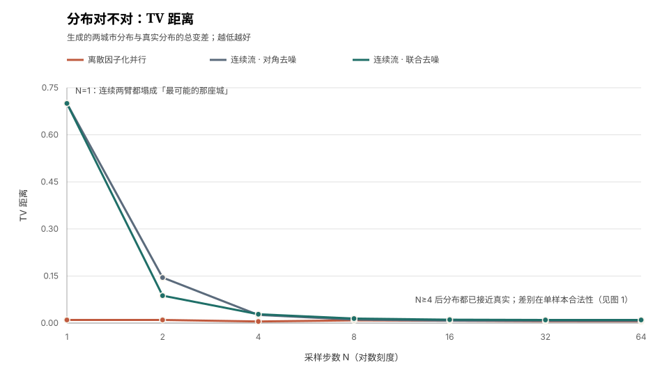
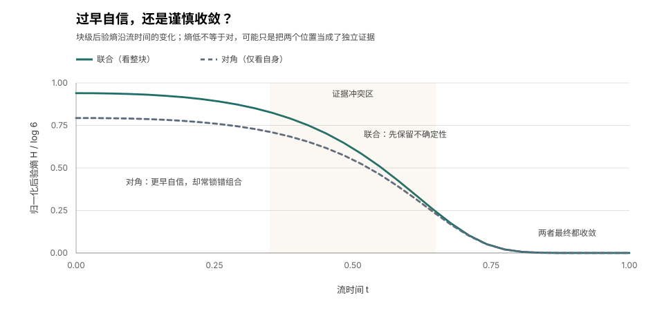
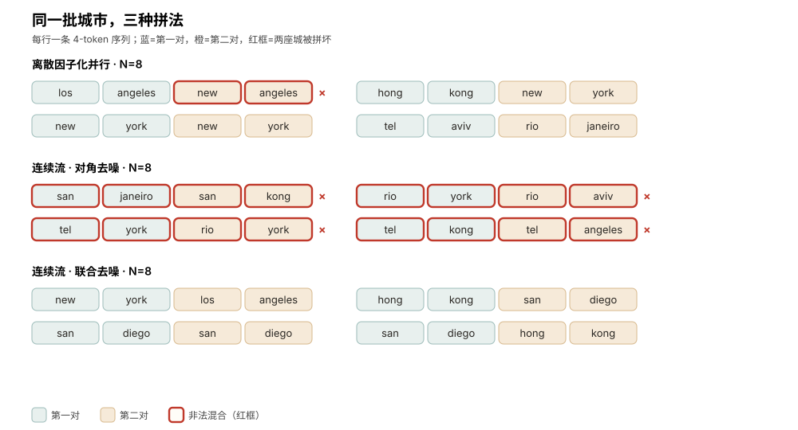
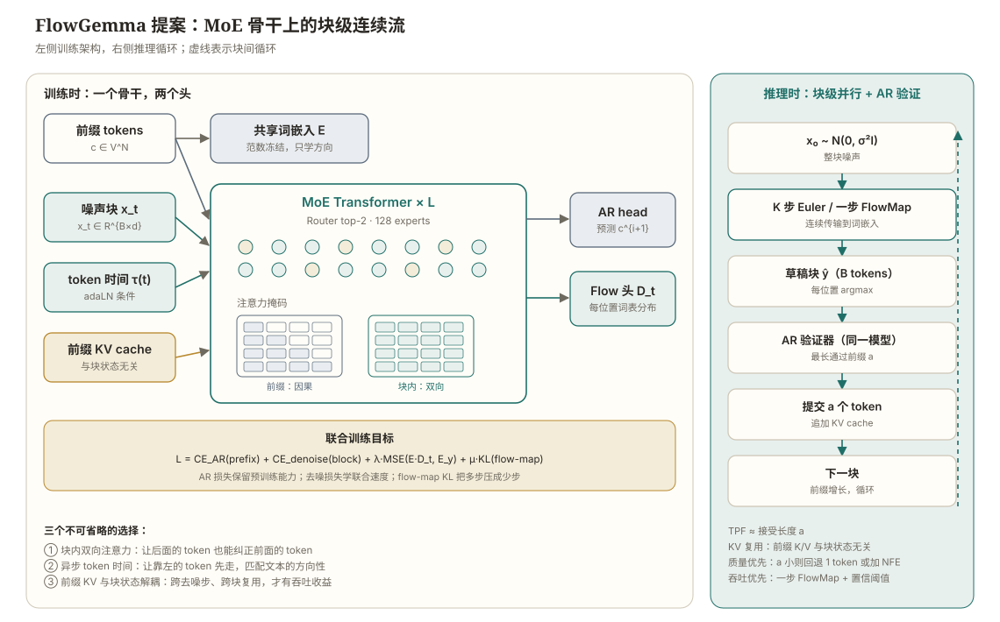
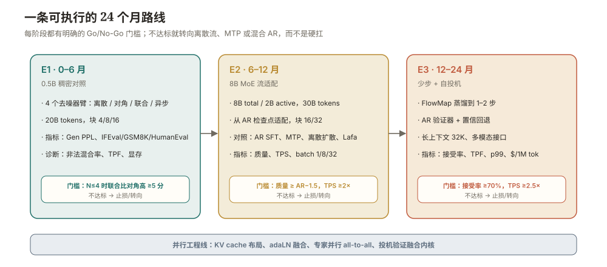

导读#
先给结论#
你提出的判断——Flow Generation / Flow Matching 是 Diffusion LLM 之后非常值得关注的方向——在 2026 年已经从「合理猜想」变成了「有论文、有代码、有 8B 级证据」的工程路线。但它并不是一条平坦的替代之路。把现有证据摊开看，会得到三个更精确的结论：
- 连续流在少步生成上确实赢了离散扩散。 FMLM 在 LM1B 上一步生成 Gen PPL 119.34，而当时最好的离散蒸馏基线是 292.94；在 OWT 上分别是 168.30 和 370.51。FS-DFM 用 8 步达到 1024 步离散流的质量，Logit-KL 在 1.5B 上把 256 步的 PPL 压到 51.5。这些不是「理论上更优雅」，而是可测的质量-步数曲线。
- 连续流要真正可用，必须是「联合」的，不能是「逐位置独立」的。 这是本报告最重要的技术判断，也是对你原方案的一个修正。我们做了一个独立的 oracle 玩具实验：同样是连续流，如果每个位置只看自己的噪声状态，非法混合率会停在 79.5% 的平台；如果去噪器看整个块，非法混合率是 0%。换句话说，「连续」本身不解决因子化误差，块内联合才解决。Lafa 的 block-bidirectional attention 不是可选项，而是这条路线成立的前提。
- FlowGemma 目前不存在，但它的三个部件都已经分别被验证。 MoE 骨干有 DiffusionGemma（25.2B total / 3.8B active，256-token canvas，N=48）；块级连续流有 Lafa（8B，<30B training tokens，2.54× AR 吞吐）；少步流映射有 FMLM、FMLM★、aFMLM、Categorical Flow Maps、DBTM。把它们拼起来是一个合理的工程命题，但「拼起来」本身需要新的训练配方和内核工作，不能假设 1+1+1=3。
一张判断表#
| 判断 | 置信度 | 主要依据 | 主要反证/风险 |
|---|---|---|---|
| 2027 年前会出现 10B+ 开源连续流 LM，质量接近同规模 AR | 70% | Lafa 8B 已匹配/超过 AR；RePlaid、LangFlow 证明连续扩散可缩放 | 少步流映射仍有质量差距；长上下文未验证 |
| Flow + MoE 的「FlowGemma」类模型会在 2027–2028 出现 | 60% | DiffusionGemma 已证明 MoE + 离散扩散；Lafa 已证明 8B 流适配 | MoE 路由在去噪状态下的稳定性未解；训练成本高 |
| 纯 Flow 不会取代 AR，混合 AR+Flow / Flow-as-draft 会成为主流加速方案 | 80% | Lafa 的自投机验证；FMLM 的 AR 联合训练保留 AR 能力 | 高 batch 下 AR 的 MFU 优势仍在；Flow 的收益集中在低 batch |
| 离散扩散在任意顺序编辑、填充、约束生成上保留优势 | 75% | MDM 的任意位置擦写；Posterior Refinement 的灵活性 | 连续流也可通过 masking-style 噪声获得类似能力（FMLM+） |
| 瓶颈会从算法转向 kernel / 服务栈 | 85% | KV cache 布局、adaLN 融合、MoE all-to-all、投机验证融合 | 算法仍有少步质量、路由稳定性等硬问题 |
一分钟版本#
把语言生成想成一条河。自回归（AR）是一个人站在河边，一次只放一滴墨，等它流到终点再放下滴；稳定，但慢。离散扩散像把一整块墨云吹到纸上，然后反复擦、反复补，直到看起来像字；可以并行，但每次擦补都要重新看整块纸，而且同时补多个位置时，位置之间容易「各写各的」，拼出半座城市。连续流则把每个 token 变成一滴有坐标的墨，所有墨滴沿着同一个速度场一起流；如果速度场能看到整块墨的相对位置，它们就会保持彼此的约束，最后一起落到词上。流映射（flow map）是给这条河画一张「瞬移图」：不必一步步走，直接从一个时刻跳到另一个时刻，把 4 步压成 1 步。AR 验证则是最后一道闸门：让模型自己的 AR 头检查草稿，通过多少就提交多少。
DiffusionGemma 证明了下游工程可行：256-token 画布、块间因果、块内双向、48 步上限、熵约束采样、约 20 TPF、H100 上约 1500 TPS。但它仍是离散状态、逐位置分类、需要多步。FlowGemma 的提案是把「离散擦补」换成「连续联合传输」，把 48 步压到 1–4 步，把 MoE 的容量保留下来，把前缀 KV cache 的复用做到极致。目标不是 1500 TPS 的极限数字，而是在同等质量下做到 AR 的 2.5–4 倍吞吐，并把低 batch 的延迟打下来。
阅读地图#
这份报告分十章，建议按「结论 → 证据 → 方案 → 工程」的顺序读：
- 第 1 章：为什么是现在。AR 的物理极限、三条并行路线、DiffusionGemma 的真实位置。
- 第 2 章：理论谱系。离散扩散、连续流、流映射、离散流、Transition Matching，以及「因子化误差」的数学。
- 第 3 章：五篇必读的深读，加上 2026 年必须知道的九篇新证据（Lafa、RePlaid、LangFlow、S-FLM、DBTM、ELF-REG、TTCD、FMLM★、aFMLM、Posterior Refinement）。
- 第 4 章：连续 vs 离散的决策表，以及我们独立做的三臂玩具实验。这一章是整份报告的技术核心。
- 第 5 章：FlowGemma 的架构提案。MoE + 块级连续流 + 流映射 + KV cache + AR 验证，含参数/算力估算、训练配方、失败模式。
- 第 6 章：E1/E2/E3 实验方案。每一阶段的目标、变量、指标、预算、Go/No-Go 门槛。
- 第 7 章：工程与部署。KV cache、TPF/TPS、batch 交叉点、内核、服务策略、成本模型。
- 第 8 章：判断与路线图。五个判断、24 个月路线、对讯飞的具体建议。
- 第 9 章：阅读清单。必读、扩展、综述、代码与模型链接。
- 第 10 章：附录。数学推导、术语表、论文核验表、实验复现、伪代码、局限。
工匠笔记 0：这份报告不假设你同意我。 每一章都尽量把「证据」「推断」「猜测」分开标注。凡是标了「置信度」的判断，都是我的主观概率，不是论文结论。凡是标了「提案」的架构，都是待验证的设计，不是已存在的模型。
为什么是现在：一条被内存墙卡住的河#
先讲一个场景。夜里，河边只有一个人。他手里有一瓶墨，每次只滴一滴，等墨在水里散开、流到该去的位置，再滴下一滴。他知道下一滴该落在哪里，因为他看见了上一滴的轨迹。这就是自回归生成：稳定、可控、可解释，但整条河只能一滴一滴地走。 另一群人想把整瓶墨一次倒进河里。问题是，墨滴之间会互相碰撞：有的提前到了，有的还在上游；如果你同时让每一滴自己决定去哪，它们可能拼出一座不存在的城市——「新」和「迭戈」被拼成了「新迭戈」。离散扩散的做法是反复擦、反复补；连续流的做法是给每滴墨一个坐标，让它们沿着同一个速度场一起走。真正难的从来不是「让墨变连续」，而是「让墨滴看见彼此」。
1.1 AR 的物理极限：不是算法慢，是内存墙#
自回归（AR）解码的瓶颈不在 FLOPs，而在内存带宽。生成一个 token 需要把整个模型的权重从显存读一遍，再和 KV cache 做注意力。batch=1 时，GPU 的算力大量闲置，时间主要花在「搬权重」上。Lafa 论文在单张 H100、bf16、batch=1 的条件下测得 Qwen2.5 7B AR SFT 的平均吞吐是 39.5 tokens/s（IFEval/GSM8K/HumanEval 平均，Table 8）。这个数字很有代表性：7B 模型、H100、batch=1，AR 就是四十上下。
提高 batch 可以摊薄权重读取，但延迟会上升；投机解码（speculative decoding）用一个小模型或额外头先草拟 3–6 个 token，再用大模型一次验证，能把 TPF（tokens per forward）提到 3–6，但草稿模型本身仍是串行的，且接受率随草稿长度下降。MTP（multi-token prediction）在训练时加辅助头，DeepSeek-MTP 在 Lafa 的对照里做到 53.6 TPS、76.3% 平均准确率，约 1.36× AR；MARS 用置信阈值提交，48.4 TPS、76.1%。这些是「在 AR 框架内做微调」的收益，量级是 1.3–1.5×，不是数量级。
1.2 三条并行路线：MTP、离散扩散、连续流#
过去两年，试图打破「一次一个 token」的路线可以粗分为三条：
| 路线 | 代表 | 并行的单位 | 主要优势 | 主要代价 |
|---|---|---|---|---|
| 多 token 预测 / 投机 | DeepSeek-MTP、MARS、EAGLE | 2–8 个草稿 token | 不改 AR 主干，工程成熟 | 收益受接受率限制，通常 <2× |
| 离散扩散 / 块自回归 | MDLM、Dream、LLaDA、Fast-dLLM、DiffusionGemma | 256-token 画布或块 | 可任意顺序擦写，并行度高 | 多步去噪，因子化误差，质量-步数 trade-off |
| 连续流 / 流匹配 | FMLM、FS-DFM、Logit-KL、Lafa、LangFlow | 整块连续状态 | 少步、联合传输、可做流映射 | 状态维度高、训练/内核不成熟、少步蒸馏难 |
三条路线不是互斥的。Lafa 的做法是「连续流 + AR 验证」：用流生成草稿块，再用同一个模型的 AR 头验证，提交最长通过前缀。它把「并行」和「正确性」拆开：并行负责快，AR 负责对。这是本报告认为最务实的形态。
1.3 DiffusionGemma 的真实位置：工程已经跑通，但还不是终点#
DiffusionGemma 是 Google DeepMind 在 2026 年 7 月发布的技术报告（arXiv:2608.00146v1），它不是「又一个扩散 LM」，而是第一个把离散扩散做到 25B 级 MoE、并公开权重的系统。关键事实：
- 规模：从 Gemma 4 26B A4B MoE 微调而来，25.2B total / 3.8B active，词表 262k。
- 画布：256 个 token 一块；块间因果，块内双向；编码器用因果注意力，解码器用双向注意力。
- 去噪：最多 N=48 步；实际平均约 12 步（自适应停止）；token 选择熵阈值 0.1，停止熵阈值 0.005；温度从 0.8 线性降到 0.4。
- 吞吐：平均约 20 TPF，单张 H100 约 1500 output tokens/s；大约是 Mercury 2 的 2.5 倍；训练只用了原 AR 模型 <10% 的 token 预算。
- 保留能力：AR 生成、思考、多模态、长上下文都保留；但相对 AR 仍有质量差距，输出偏简洁，偶有 stuttering，多模态场景有 closing-tag 问题。
- batch 交叉点：在低 batch 下吞吐优势明显，大约到 32 个并发请求之后，AR 开始凭更高的 MFU 反超。
这组数字说明两件事。第一，离散扩散的工程链路（画布、KV cache、采样器、vLLM/HF 推理）已经打通，不是实验室玩具。第二，它的收益有明确的边界：低 batch、短输出、吞吐优先的场景；高 batch 或高质量要求下，AR 仍然更强。DiffusionGemma 的天花板不是「能不能跑」，而是「离散状态 + 多步 + 因子化」这三件事带来的质量-步数约束。
1.4 为什么 2026 是拐点：四条证据链同时到位#
2026 年之前，连续流语言模型的关键词是「优雅但不够强」。2026 年之后，四条证据链同时到位：
- 少步质量：FMLM（NeurIPS 2026）证明 one-hot 连续流的一步生成可以显著超过离散蒸馏基线；FS-DFM（ICLR 2026）用 8 步达到 1024 步离散流的质量；Logit-KL（ICLR 2026）在 1.5B 上把 256 步 PPL 做到 51.5。
- 规模化：Lafa（2026-10）把块级连续流做到 8B，只用 <30B training tokens，就在指令跟随、数学、代码上匹配或超过 AR，并用自投机做到 2.54× 吞吐；RePlaid（NeurIPS 2026）给出第一个能与离散扩散竞争的连续扩散缩放律，与 AR 的算力差距约 20×；LangFlow（NeurIPS 2026）在 LM1B/OWT 上把连续流的生成 PPL 做到 92.3/36.5。
- 流映射理论：FMLM 的 two-time denoiser + semigroup KL、FMLM★ 的 fixed-point flow、aFMLM 的异步流映射、Categorical Flow Maps 的自蒸馏、DBTM 的无教师一步传输，把「多步 → 少步」从技巧变成了可证明、可复现的模块。
- MoE 服务栈：DiffusionGemma 证明 25B MoE 可以在 256-token 画布上做块级并行；vLLM/HF 已经有参考实现。MoE 的「总参数大、激活参数小」正好匹配低 batch 的内存墙：用更少的激活权重换更大的容量。
这四条链合起来，才让「FlowGemma」从一句口号变成一个有实验路径的命题。
1.5 缺的那一块：联合，而不是连续#
你的原方案把「Flow Matching + MoE + KV Cache + Block Parallel Generation」列为四个部件。方向是对的，但四个部件里有一个隐含假设：只要状态变连续，因子化误差就会自动消失。这个假设不成立。
我们用两个强相关的 token（比如「new」和「york」）做了一个 oracle 实验：同样是连续流，如果每个位置只看自己的噪声状态（对角去噪），非法混合率会停在 79.5%；如果去噪器看整个块（联合去噪），非法混合率是 0%。这说明：
- 连续解决的是「硬提交不可逆」的问题：token 一旦被采样就不能改；连续状态可以在 ODE 里被反复修正。
- 联合解决的是「位置之间不商量」的问题：两个位置必须能看见彼此的噪声状态，才能保持「城市对」的约束。
- 流映射解决的是「步数太多」的问题：把多步 ODE 蒸馏成一步或两步的映射。
- KV cache 解决的是「前缀重复计算」的问题：前缀的 K/V 与块状态无关，可以跨步、跨块复用。
- AR 验证解决的是「草稿可能错」的问题：用同一个模型的 AR 头验证，提交通过的前缀。
这五件事缺一不可。FlowGemma 的提案，就是把它们按正确的顺序拼起来。

工匠笔记 1：不要把「连续」当成万能药。 连续流的最大优势是「可逆的软状态 + 可学习的流映射」，不是「连续」这个词本身。如果一个连续流模型仍然逐位置独立去噪、仍然没有块内双向注意力，它会比离散扩散更糟：它会用连续状态自信地拼出错误的联合分布。第 4 章的实验会把这件事量化。
理论谱系：从「擦除」到「流动」#
如果把生成模型比作一条河，那么有三个人在河边工作。第一个人（似然派）关心的是「这条河最终把墨送到每个位置的概率是多少」；第二个人（得分派）关心的是「墨在水里的浓度梯度指向哪里」；第三个人（速度派）关心的是「每一滴墨此刻应该往哪个方向、以多快的速度走」。三个人描述的是同一条河，只是用了不同的语言。扩散模型用的是「浓度 + 擦除」，流匹配用的是「速度 + 搬运」。理解这两种语言的翻译关系，是理解 Flow LLM 的第一步。
2.1 三种语言：似然、得分、速度#
生成模型的核心任务都是把简单分布（高斯噪声、均匀噪声、mask）变成数据分布。区别在于「中间过程怎么描述」：
- 离散扩散：状态是词表上的 one-hot 或 mask；用连续时间马尔可夫链（CTMC）定义「每个 token 以多大概率被擦除/替换」；模型学习的是「给定当前损坏序列，每个位置原来是什么词」。
- 连续扩散：状态是 $\mathbb R^d$ 中的向量；用随机微分方程（SDE）或概率流 ODE 定义「噪声如何逐渐变成数据」；模型学习的是得分函数 $\nabla_x \log p_t(x)$。
- 流匹配：状态也是 $\mathbb R^d$；直接定义一个从噪声到数据的概率路径 $p_t$，并学习该路径的速度场 $v_t(x)$；采样就是解一个 ODE。
三者的关系可以一句话概括：扩散是「先定义噪声过程，再推导速度」；流匹配是「先定义路径，再直接学速度」。 流匹配不需要模拟前向 SDE，训练目标更简单（回归一个条件速度），采样也更稳定（确定性 ODE）。代价是：路径的选择、时间重参数化、少步蒸馏，都变成必须显式设计的对象。
2.2 离散扩散：CTMC、ELBO 与因子化误差#
设序列长度为 $L$，词表为 $V$。离散扩散在 $V^L$ 上定义一个连续时间马尔可夫链 $y_t$，其速率矩阵 $R_t$ 满足前向方程
最常见的 masking 过程把每个 token 以一定速率替换为 [MASK]；在时间 $t=1$ 时，序列变成全 mask，在 $t=0$ 时是干净数据。模型 $p_\theta(y^i \mid y_t)$ 学习「给定损坏序列，第 $i$ 个位置的原词」。训练目标是证据下界（ELBO）的一个等价形式：
采样时，模型从全 mask 开始，反复预测每个位置的概率，按某个 schedule 逐步「解 mask」。问题出在「同时解多个位置」：如果第 $i$ 和第 $j$ 个位置在同一步被独立采样，那么生成的联合分布是
而真实的后验是 $p(y^i, y^j \mid y_t)$。两者之间的差距就是因子化误差（factorization error）。当两个位置强相关时，这个误差可以非常大：模型可能同时把「new」和「diego」都判成高概率，于是拼出「new diego」——每个位置单看都合理，合起来是错的。
这不是一个可以通过「多训练一点」消除的误差。它是采样机制的结构性误差：只要你在同一步独立提交多个位置，联合分布就被强行拆成了边缘分布的乘积。离散扩散的很多改进（置信度阈值、块内迭代、任意顺序解 mask）都是在缓解这个问题，但没有从根本上消除它。
2.3 连续流：路径、速度与「软状态」#
连续流把每个 token 变成一个向量。最简单的是 one-hot 嵌入：词表大小为 $|V|$，每个 token 是 $\mathbb R^{|V|}$ 中的一个单位向量。给定噪声 $x_0 \sim \mathcal N(0,\sigma^2 I)$ 和数据 $x_1 = e_y$，线性插值路径是
对这条路径，条件速度的期望有闭式：
模型 $v_\theta(x_t,t)$ 通过回归条件速度来学习：
采样时解 ODE：
最后对每个位置的 $x_1$ 取 argmax 得到 token。这个过程是确定性的：给定 $x_0$，ODE 给出唯一的 $x_1$。这也是为什么连续流可以做「流映射」——确定性映射可以被蒸馏、被组合、被求逆（在数值意义上）。
从去噪器到速度。 直接回归 $x_1-x_0$ 在 one-hot 高维空间里方差很大。FMLM 的做法是让模型输出一个单纯形上的去噪分布 $D_t(x)\in\Delta^{|V|-1}$，再用恒等式把它变成速度：
其中 $E\in\mathbb R^{|V|\times d}$ 是词嵌入矩阵。这个恒等式的好处是：模型只需要做「每个位置是哪个词」的分类，和语言模型的输出头完全一致；速度则由「当前状态指向去噪预测」的方向自动给出。FMLM 还进一步做了时间重参数化：让时间进度与解码错误率匹配，
其中 $P_e(t)$ 是模型在时间 $t$ 的解码错误率。直观地说，错误率高的阶段走得慢一点，错误率低的阶段走得快一点；并在边界处留一个 $p=1/32$ 的概率质量，避免 $t\to 1$ 时的数值奇点。这个设计让 FMLM 在少步 regime 下的质量显著提升。
one-hot、embedding、simplex、sphere、latent。 连续流的状态空间选择是一个核心设计变量：
- one-hot：维度 $|V|$，与语言模型输出头天然对齐；缺点是维度高、内存 $O(L|V|)$，且所有 one-hot 向量等距，高斯噪声没有语义。
- embedding：维度 $d\ll |V|$，用预训练词嵌入 $E$ 作为数据端点；Lafa 用这种方式把每 token 维度从 $|V|$ 降到 $d$，并共享前缀与流的嵌入。缺点是嵌入范数可能漂移，需要冻结范数、只学方向。
- simplex：状态是概率单纯形上的点；FMLM 的消融显示 simplex 的 Gen PPL 85.07 优于 Euclidean 的 96.91，但熵会塌缩（3.76 vs 4.29），需要显式熵正则。
- sphere：S-FLM 把状态放在超球面 $\mathbb S^{d-1}$ 上，用旋转代替平移，避免 one-hot 的高维开销；在推理任务上缩小了与 masked diffusion 的差距。
- latent：LangFlow、RePlaid 在嵌入空间做似然训练，用 ODE 的 NLL bound 做评估；RePlaid 的缩放律显示连续扩散与 AR 的算力差距约 20×。
2.4 流映射：把「多步」压成「一步」#
流匹配的采样需要多步 ODE。步数越多，质量越好，但延迟越高。流映射（flow map）要解决的就是这个矛盾：学习一个两时间映射 $X_{s,t}(x_s)$，它直接把时刻 $s$ 的状态搬到时刻 $t$，而不需要中间的每一步。它满足半群性质：
如果模型能学会 $X_{0,1}$，那么采样就是一次前向：$x_1 = X_{0,1}(x_0)$。这就是「一步生成」的来源。
训练流映射有两种主流做法：
- 蒸馏：先训练一个多步教师 $v_\theta$，再让学生 $X_{s,t}$ 匹配教师的两步组合。FMLM 的 two-time denoiser 把「去噪分布」和「时间映射」分开：$\delta_{s,t}(x)$ 输出 token 概率，$X_{s,t}(x)$ 在嵌入空间做插值。蒸馏损失是 KL：
其中 $\mathrm{sg}$ 是 stop-gradient，$u$ 是中间时刻。对角项 $s=t$ 匹配教师，非对角项匹配两个短学生的组合；这就是 semigroup distillation。
- 自蒸馏 / 无教师：Categorical Flow Maps 用端点一致性自蒸馏；DBTM 构造一个时间无关的传输映射，证明它能一步把任意点送到单纯形顶点，并用守恒方程直接从数据训练，不需要教师。这类方法把「少步」从两阶段流程变成一阶段，但理论假设更强。
流映射的代价是：它把「多步修正」的能力压缩进一个网络，学生很难完全保留教师的迭代 refinement。FMLM 的一步 Gen PPL 是 119.34，两步 110.19，四步 98.76；一步已经很强，但和四步仍有差距。FMLM★ 进一步把 self-conditioning 解释为不动点迭代，用 fixed-point flow 把「流过程」和「不动点迭代」拆成两个维度，蒸馏后一步生成超过此前的自条件模型。Posterior Refinement 则给 FMLM 加上 masking-style 噪声，让一步生成后还能做「后验修正」，用 32× 更少的 NFE 匹配离散基线。
2.5 离散流：不连续的状态，也可以有连续的时间#
「流」不一定要在连续状态空间里做。离散流匹配（DFM）在离散状态上定义连续时间的概率路径，用 CTMC 的速率矩阵描述「token 从 $y$ 跳到 $z$」的瞬时倾向。一般离散路径的工作（General Discrete Paths, ICLR 2025）证明：只要给定任意概率路径 $p_t$，就可以构造一个与之解耦的速度场，并通过最小化对称动能得到「kinetic-optimal」的解。这把离散扩散从「只能 masking」解放出来：你可以设计任意 corruption process（mask、uniform、insert-delete、词表替换），并得到相应的流。
- FS-DFM（ICLR 2026）把「采样步数 $h$」变成显式条件：模型在训练时看到不同的步数预算，学习一个「步数感知」的速度；推理时用 RK-4 shortcut teacher 和 EMA teacher 做少步蒸馏。8 步就能达到 1024 步 DFM 的质量，最多 128× 加速。它的关键洞察是：少步不是「把多步跑快」，而是「训练一个知道步数少的速度场」。
- Logit-KL（ICLR 2026）在 logit 空间做 KL 测地线插值：KL 散度下的测地线对应 logit 空间的线性插值。这样既保留了「概率路径」的几何意义，又让速度场有闭式形式。它在 150M/1.5B 上显著优于线性插值和 Fisher–Rao 插值；条件生成 BLEU 9.5 vs DFM 8.1，代码填充 Pass@1 17.4 vs 11.1（10% masking）。局限是条件分布仍然是因子化的近似。
- Transition Matching（NeurIPS 2025）把生成拆成离散时间的连续状态马尔可夫转移，统一了扩散/流和连续 AR；DTM/ARTM/FHTM 三个变体在图像和 text-to-image 上拿到 SOTA。它提醒我们：「离散 vs 连续」不是唯一的轴，「时间离散 vs 连续」「状态离散 vs 连续」可以分开选。
2.6 因子化误差：一个可以被算清楚的量#
为了把「联合 vs 因子化」讲清楚，考虑一个最简单的例子：两个位置，每个位置属于一个强相关的城市对。城市对有 $K$ 个，第 $k$ 对的概率是 $p_k$，两个位置必须来自同一对。真实联合分布只在 $K$ 个对角组合上有质量；因子化近似则在 $K\times K$ 个组合上都有质量。
如果两个位置在同一步被独立提交，那么非法组合的概率是
这个量只取决于城市对的分布，不取决于模型多强。即使每个位置的边缘分布都完美，只要同时独立提交，就会有 $q_{\text{invalid}}$ 的概率拼错。如果两个位置以 $1/N$ 的概率落在同一步（随机提交顺序），那么非法率约为
这就是离散因子化并行的「1/N 碰撞律」。它说明：增加步数可以降低非法率，但永远不能到 0；除非你保证两个相关位置从不同时提交。 而「保证不同时提交」在并行生成里是反效率的：你越并行，越容易碰撞。
连续流的联合去噪则不同：两个位置的噪声状态 $x_t^0,x_t^1$ 都携带关于城市对的信息，去噪器可以计算联合后验 $p(k\mid x_t^0,x_t^1)$，并让两个位置的速度都指向同一个城市对。即使两个位置在同一步更新，它们也不是「各自独立采样」，而是「在同一个联合后验下一起移动」。这就是为什么联合连续流可以在 N=2 时做到 0% 非法率，而离散因子化在 N=2 时仍有约 40% 的非法率。
第 4 章会用三臂实验把这个差异量化。这里先记住结论：因子化误差是采样机制的问题，不是模型容量的问题；连续状态提供了「软修正」的可能，但只有联合去噪才能把这种可能变成「正确的联合分布」。
2.7 KV cache：为什么块级流能缓存，而全画布离散扩散不能#
KV cache 是推理吞吐的核心。对 AR 来说，前缀的 K/V 只依赖前缀，生成新 token 时可以直接复用。对块级流来说，前缀的 K/V 也一样：前缀位置的时间固定为 1（无噪声），它们的 K/V 与块内噪声状态无关，所以可以跨去噪步、跨块复用。块内的位置是双向注意力，每个去噪步的块状态都变，所以块内 K/V 必须每步重算；但块一旦提交，它的 K/V 就可以追加到 cache，成为下一块的前缀。
这就是 Lafa 的「causal prefix + block-bidirectional」设计：前缀因果、块内双向、块间追加。它同时满足三个条件：前缀可缓存、块内可联合去噪、块间保持 AR 的因果分解。
DiffusionGemma 的 256-token 画布是另一种取舍：编码器用因果注意力处理上下文（可缓存），解码器在画布内用双向注意力（不可缓存，每步重算整个画布）。这换来的是「整块 256 token 一起 refine」的灵活性，代价是每个去噪步都要付整个画布的注意力成本。块级流的块更小（16/32），每步只算一个块，前缀 cache 复用，因此在低 batch 下更省。
工匠笔记 2：三个「连续」不是一回事。 状态连续（continuous state）、时间连续（continuous time）、传输连续（continuous transport）是三个不同的设计维度。离散流有连续时间但离散状态；连续流有连续状态和连续时间；Transition Matching 则是离散时间、连续状态。讨论「Flow vs Diffusion」时，先问清楚是哪一维连续，否则很容易把不同的东西混在一起。

五篇必读，以及 2026 年必须知道的九篇新证据#
想象一条走廊，尽头有五扇门。第一扇门写着「一步生成」（FMLM），第二扇写着「少步离散流」（FS-DFM），第三扇写着「logit 几何」（Logit-KL），第四扇写着「任意路径」（General Discrete Paths），第五扇写着「统一框架」（Transition Matching）。推开每一扇门，你都会看到同一件事的不同侧面：如何让多个 token 在一次前向里一起变得正确。2026 年，走廊尽头又开了九扇新门，其中最重要的一扇叫 Lafa——它第一次把「块级连续流」做到了 8B。
3.1 FMLM：一步生成，连续去噪#
论文：Flow Map Language Models: One-step Language Modeling via Continuous Denoising（Lee, Yoo, Agarwal, Shah, Huang, Raghunathan, Hong, Boffi, Kim；arXiv:2602.16813v3；NeurIPS 2026；KAIST + CMU；代码 github.com/david3684/flm，项目页 one-step-lm.github.io）。
它解决什么问题：离散扩散在少步 regime 下质量崩得厉害。FMLM 问：如果把状态换成 one-hot 连续向量，能不能既保留「并行生成」，又让少步生成的质量超过离散扩散？
核心想法：在 one-hot 嵌入空间做流匹配，学习一个 two-time denoiser，把「多步 ODE」蒸馏成「一步映射」。具体来说：
- 状态 $x_t\in\mathbb R^{L\times |V|}$，数据端点是 one-hot $e_y$，噪声是高斯。
- 模型输出单纯形上的去噪分布 $D_t(x)$，速度由 $v_t(x)=(D_t(x)E-x)/(1-t)$ 给出。
- 用时间重参数化 $\tau(t)=1-\frac{|V|}{|V|-1}P_e(t)$ 把「解码错误率」映射到「流时间」，并在边界留 $p=1/32$ 的质量。
- 用 two-time denoiser $\delta_{s,t}(x)$ 做流映射：对角项匹配教师，非对角项匹配两个短学生的组合（semigroup KL）。
关键数字（LM1B / OWT，Gen PPL 越低越好）：
| 方法 | LM1B 1 步 | LM1B 2 步 | LM1B 4 步 | OWT 1 步 | OWT 2 步 | OWT 4 步 |
|---|---|---|---|---|---|---|
| 离散蒸馏最强基线（Duo+Di4C） | 292.94 | 247.69 | 150.67 | 370.51 | — | — |
| FMLM | 119.34 | 110.19 | 98.76 | 168.30 | 133.29 | 111.31 |
| FMLM 1024 步（参考） | 96.91 | — | — | 62.23 | — | — |
一步生成已经超过离散蒸馏最强基线 2.4×（LM1B）和 2.2×（OWT）；两步、四步继续提升。条件生成的一步 PPL 是 141.66，对比离散基线 374.70。
消融告诉我们什么：
- one-hot vs 学习嵌入：one-hot 130.42，学习嵌入 324.66。在 FMLM 的设置里，one-hot 的「高维但线性可分」比「低维但学出来的嵌入」更好；这与 Lafa 选择预训练嵌入、冻结范数的做法不同，说明嵌入空间的选择高度依赖训练配方。
- simplex vs Euclidean：simplex 85.07（熵 3.76）vs Euclidean 96.91（熵 4.29）。simplex 的 PPL 更好，但熵塌缩更严重，需要熵正则。
- 时间重参数化：无重参数化 149.18，解码错误率重参数化 106.98。时间怎么走，比「走多少步」更重要。
- 边界概率：无边界 142.61，$p=1/32$ 119.34。$t\to 1$ 的数值奇点不是小事。
代价：one-hot 状态是 $O(L|V|)$ 的内存和时间；论文测得比 embedding diffusion 高约 30% 的训练时间和显存；two-model flow map 在推理时显存翻倍。这就是为什么后来的 Lafa 改用低维嵌入。
局限：1 步与 4 步仍有差距；长序列的 $O(L|V|)$ 成本高；条件生成的因子化近似仍在。
3.2 FS-DFM：让「步数」成为训练时的显式变量#
论文：FS-DFM: Fast and Accurate Long Text Generation with Few-Step Diffusion Language Models（Monsefi, Bhendawade, Ciosici, Culver, Zhang, Belousova；Apple + Ohio State；arXiv:2509.20624v5；ICLR 2026；代码 github.com/apple/ml-fs-dfm）。
它解决什么问题：离散流模型通常要几百到上千步才能达到好质量。FS-DFM 问：能不能训练一个「知道自己只有 8 步」的模型？
核心想法：把采样步数 $h$ 作为条件输入，模型学习「在 $h$ 步预算下，当前时刻应该更新多少」。它用一个累积标量更新（cumulative scalar update）控制每个 token 的进度，并用 RK-4 shortcut teacher 和 EMA teacher 做少步蒸馏。数据侧用 1024-token 块 + 512-token 前缀，保证长文本一致性。
关键数字：
| NFE | 基线 DFM PPL | FS-DFM PPL |
|---|---|---|
| 1 | 1312.65 | 514.40 |
| 2 | 462.31 | 333.07 |
| 4 | 194.29 | 176.19 |
| 8 | 97.51 | 90.49 |
| 1024 | 85.61 | 87.36 |
8 步就达到 1024 步基线的质量（90.49 vs 85.61，差距很小），最多 128× 加速。8 步 PPL 在 0.17B/1.3B/1.7B 上分别是 75.78/70.97/72.84；uniform source 比 mask source 更好，这是一个反直觉但重要的发现：离散流的源分布不一定要用 mask。
局限：它仍是离散状态、逐位置分类；「步数感知」缓解了少步误差，但没有消除联合建模的问题。
3.3 Logit-KL：在 logit 空间走测地线#
论文：Logit-KL Flow Matching: Non-Autoregressive Text Generation via Sampling-Hybrid Inference（Sevriugov, Dragunov, Razzhigaev, Kuznetsov, Oseledets；arXiv:2411.16821v5；ICLR 2026）。
它解决什么问题：连续流在概率空间里的插值不一定几何合理。Logit-KL 问：如果我们在 logit 空间做「KL 测地线」插值，会不会更好？
核心想法：KL 散度下的测地线对应 logit 空间的线性插值。于是可以定义一个既有几何意义、又有闭式速度的流。推理时有三种模式：确定性（取 argmax）、采样（按概率采样）、混合（确定性 + 采样）。这让它既能做高质量生成，也能做多样性采样。
关键数字：
- 150M 模型，1024 NFE，PPL：线性插值 1344（Llama2 分词）/15418（GPT3）/13881（GPT2）；Fisher–Rao 192/298/379；KL-Flow 41/53/62。
- 1.5B 模型，256/512/1024 NFE：51.5/41.7/32.7（Llama2）；81.1/63.7/48.4（GPT3）；96.6/76.2/58.5（GPT2）。
- 条件生成 BLEU 9.5 vs DFM 8.1；代码填充 Pass@1 17.4 vs 11.1（10% masking）。
局限：条件分布仍然是因子化的近似；它证明了「几何选择」很重要，但没有解决「联合采样」的问题。
3.4 General Discrete Paths：任意腐蚀过程，都能变成流#
论文：Flow Matching with General Discrete Paths: A Kinetic-Optimal Perspective（Shaul, Gat, Havasi, Severo, Sriram, Holderrieth, Karrer, Lipman, Chen；arXiv:2412.03487；ICLR 2025）。
它解决什么问题：离散扩散大多只会 masking。能不能设计任意的离散概率路径（uniform、insert-delete、词表替换），并得到相应的流？
核心想法：在 CTMC 上定义任意概率路径 $p_t$，通过最小化对称动能，构造一个与路径解耦的速度场。这个速度场是「kinetic-optimal」的：在给定路径下，它是最省力的传输方式。
关键数字：Wikitext103 PPL 41.83 vs SEDD 42.88；图像 FID 4.50 vs 5.72。它把「离散流」的设计空间从「masking」扩展到了「任意 corruption」，为后来的 FS-DFM、Logit-KL、Transition Matching 提供了理论基础。
3.5 Transition Matching：把扩散、流、连续 AR 放进同一个框架#
论文：Transition Matching: Scalable and Flexible Generative Modeling（Shaul, Singer, Gat, Lipman；arXiv:2506.23589；NeurIPS 2025）。
它解决什么问题：扩散/流和连续 AR 看起来是两种东西，能不能统一？
核心想法：把生成拆成离散时间的连续状态马尔可夫转移；每个转移可以是非确定性的、可以是任意非连续的时间表。DTM（Diffusion Transition Matching）、ARTM（Autoregressive Transition Matching）、FHTM（Flow/Hybrid Transition Matching）是三个变体。它证明了扩散/流是「所有位置一起转移」的特例，连续 AR 是「每次只转移一个位置」的特例。
意义：它给了我们一个「设计空间坐标系」：你可以选择「一次转移多少位置」「转移是否连续」「时间是否连续」。FlowGemma 的块级流，本质上是「一次转移一个块、连续状态、连续时间」的一个点。
局限：论文主要在图像和 text-to-image 上评估，没有给出与 Lafa 同规模的文本 LM 对照。
3.6 2026 年的九篇新证据#
3.6.1 Lafa：8B 块级流，第一次把「规模」跑通#
论文：Large Flow Language Models（Chavan, Lee, Bamba, Yoo, Hong, Raghunathan, Kim；arXiv:2610.28559v1；2026-10-20；代码 github.com/lafa-gh/large-flow-lms，模型 huggingface.co/lafa-hf/models）。
Lafa 是本报告最重要的工程证据。它的设计几乎就是 FlowGemma 的「稠密版」：
- 块级分解：$p(y\mid c)=\prod_r p(y^{rB+1:(r+1)B}\mid c,y^{\le rB})$，块间因果，块内双向。
- 嵌入流：用预训练词嵌入 $E\in\mathbb R^{|V|\times d}$ 代替 one-hot，把每 token 维度从 $|V|$ 降到 $d$；嵌入与前缀共享，冻结范数、只学方向。
- 异步时间：每个位置有自己的 $\tau^i(t)$，靠左的 token 走得更快，匹配文本的方向性。
- 训练：从 Qwen2.5 Instruct 0.5B/7B、Qwen3 8B Base 适配；Dolci-Instruct-SFT 5–15 epochs（9–27B tokens）；总训练 token <30B，比 Dream/LLaDA/Efficient-DLM 少至少 18×。
- 推理：前缀 KV cache 跨步、跨块复用；块级并行解码；flow map 蒸馏到 1/few-step；自投机验证——用同一个模型的 AR 头验证流草稿，提交最长通过前缀。
关键数字：
| 规模 | 方法 | 平均准确率（6 benchmark） | TPF |
|---|---|---|---|
| 0.5B | AR SFT | 28.7 | 1.0 |
| 0.5B | Lafa B=4 | 31.6 | 2.9 |
| 0.5B | Lafa B=8 | 32.3 | 4.0 |
| 0.5B | Lafa B=16 | 30.8 | 5.0 |
| 7B | AR SFT | 58.4 | 1.0 |
| 7B | Lafa B=4 | 60.9 | 2.6 |
| 7B | Lafa B=8 | 59.3 | 4.3 |
| 7B | Lafa B=16 | 58.0 | 4.9 |
| 8B | AR SFT | 56.8 | 1.0 |
| 8B | Lafa B=4 | 63.1 | 2.9 |
在单张 H100、batch=1、bf16 下，Lafa 7B 的吞吐：
| 方法 | 平均准确率 | TPS |
|---|---|---|
| AR SFT | 73.9 | 39.5 |
| DeepSeek-MTP | 76.3 | 53.6 |
| MARS B=4 | 76.1 | 48.4 |
| Fast-dLLM v2 B=16 | 65.1 | 86.7 |
| Lafa B=4 | 76.5 | 79.9 |
| Lafa B=8 | 76.3 | 93.8 |
| Lafa B=16 | 74.5 | 100.2 |
B=16 时是 AR 的 2.54× 吞吐，准确率只低 1.4 个点；B=4 时约 2× 吞吐，准确率反而更高。这是「质量-吞吐帕累托」上第一次有连续流模型明确压过 MTP 和离散扩散基线。
消融（0.5B，B=4，32 Euler 步）非常关键：
| 配置 | 平均准确率 |
|---|---|
| 完全因果注意力 | 32.7 |
| 块内双向注意力 | 38.0 |
| 同步时间 | 36.2 |
| 异步 tokenwise 时间 | 38.0 |
| 冻结嵌入 | 34.4 |
| 无约束嵌入 | 36.9 |
| 范数冻结嵌入 | 38.0 |
| 仅去噪 CE | 33.6 |
| 仅去噪 MSE | 29.7 |
| CE + MSE | 35.8 |
| CE + MSE + AR | 38.0 |
| 无 self-conditioning | 32.3 |
| 有 self-conditioning | 38.1 |
| 无 guidance | 34.3 |
| prefix guidance | 38.1 |
这张表说明：块内双向、异步时间、范数冻结、CE+MSE+AR 联合损失、self-conditioning、prefix guidance，每一个都不是装饰。尤其是「完全因果 32.7 → 块内双向 38.0」，+5.3 个点，直接验证了第 2 章的「联合」论点。
局限：Lafa 是 2026-10 的 preprint，尚未经过同行评审；长上下文、多模态、RL 后训练都没有验证；8B 只在 B=4 上报告了主结果；TPF 和 TPS 是在特定 H100 配置下测得，不能直接外推到其他硬件。
3.6.2 RePlaid：连续扩散的第一个缩放律#
论文：Continuous Diffusion Scales Competitively with Discrete Diffusion for Language（Yang, Guo, Zhang, Sahoo, Chen, Vahdat, Mardani, Thickstun；arXiv:2605.18530；NeurIPS 2026）。
RePlaid 把 Plaid 的架构对齐到现代离散 DLM，得到第一个能与离散扩散竞争的连续扩散缩放律：与 AR 的算力差距只有 20×（离散扩散通常更大），在 OWT 上达到连续 DLM 的新 SOTA PPL bound 22.1，用更少参数超过 Duo，在 over-trained regime 超过 MDLM。它还从理论上说明：优化噪声 schedule 以最小化 ELBO 方差，会自然得到「线性交叉熵随 time 变化」，不需要 case-specific 时间重参数化。
意义：它反驳了「连续扩散不可缩放」的偏见。但它用的是 likelihood-based 训练，和 FMLM/Lafa 的 flow matching 路线不同；20× 算力差距仍然很大。
3.6.3 LangFlow：嵌入空间连续扩散，生成 PPL 92.3/36.5#
论文：LangFlow: Continuous Diffusion Rivals Discrete in Language Modeling（Chen, Liang, Sui, Guo, Cheng, You, Liu；arXiv:2604.11748；NeurIPS 2026）。
LangFlow 把嵌入空间 DLM 和 flow matching 连起来，提出三个组件：ODE-based NLL bound（用于原则性评估）、information-uniform 噪声 schedule（用 Gumbel 参数化可学习 scheduler）、self-conditioning。它在 LM1B 上 Gen PPL 92.3，OWT 36.5，与最强离散 DLM 竞争，并在 Sudoku 推理上超过离散对手。
意义：它证明「连续 + 嵌入空间」不仅能做少步，也能在似然和推理任务上竞争。它的 self-conditioning 分析与 FMLM★ 的 fixed-point 视角互相印证。
3.6.4 S-FLM：超球面上的流#
论文：Language Modeling with Hyperspherical Flows（Deschenaux, Gulcehre；arXiv:2605.11125）。
S-FLM 把状态放在超球面 $\mathbb S^{d-1}$ 上，用旋转（rotation）代替平移，避免 one-hot 的高维开销，并用 cross-entropy 训练速度场。它在大词表推理任务上明显改善连续流，缩小了与 masked diffusion 的差距；但在标准温度 $T=1$ 下仍有 gap。
意义：状态空间的几何选择还没有定论；sphere 是一个有前途的方向，尤其适合大词表。
3.6.5 Categorical Flow Maps：分类数据的少步流映射#
论文：Categorical Flow Maps（Roos, Davis, Eijkelboom, Bronstein, Welling, Ceylan, Ambrogioni, van de Meent；arXiv:2602.12233）。
它把 flow map 定义到单纯形，用自蒸馏和端点一致性训练，在图像、分子图、文本上都拿到 SOTA 的少步结果，甚至一步生成。它说明：flow map 不是连续高斯流独有的；分类数据也可以在单纯形上做流映射。
3.6.6 DBTM：无教师的一步传输#
论文：Discrete Beckmann Transport Models for One-Step Language Modeling and Reasoning（Tang, Wang；arXiv:2609.15903）。
DBTM 构造一个时间无关的传输映射，证明它能一步把任意点送到单纯形顶点，并用守恒方程直接从数据训练，不需要教师蒸馏。部分训练的地图等价于「截断的流」，生成就是「迭代地图到不动点」。它在语言建模和推理任务上超过离散扩散和连续流基线。
意义：如果 DBTM 的假设成立，少步生成可以不再依赖「先训教师、再蒸馏」的两阶段流程，训练成本会大幅下降。但它还处于早期，需要独立复现。
3.6.7 ELF-REG：连续扩散到数学与代码推理#
论文：ELF-REG: Scaling Continuous Diffusion Language Models to Reasoning Tasks（Li, Chen, Qian, Liu, Cheng；arXiv:2609.29102）。
ELF-REG 把 Embedded Language Flows 扩展到 GSM8K、MATH-500、HumanEval、MBPP，用 REPA+REG（冻结 AR 教师监督中间特征 + 全局表示联合去噪）提升学习。它在 64 NFE 下 GSM8K pass@1 55.96%，128 NFE 下 MATH-500 13.39%、HumanEval 22.56%；16 NFE 下 HumanEval pass@10 41.21%。
意义：连续流不再只是「困惑度好看」，它开始在可验证的推理任务上有数字。但和 AR 的差距仍然明显（GSM8K 55.96 vs 同规模 AR 通常 70%+）。
3.6.8 TTCD：每 token 的时间#
论文：Token Time Continuous Diffusion for Language Modeling（Bansal, Sanghavi；arXiv:2607.14106）。
TTCD 在连续空间做确定性映射，并引入 per-token times：有些 token 从噪声到词走得更快，有些更慢。它用 160M 模型在 OWT 上训练并自蒸馏，在高加速比下无条件生成与离散模型相当，条件生成超过若干同规模基线，Sudoku 也有提升。
意义：per-token time 是 Lafa 异步时间的先驱之一；它说明「不是所有位置都该以同样速度去噪」。
3.6.9 FMLM★、aFMLM、Posterior Refinement：把「一步」做得更稳#
- FMLM★（Yoo, Kim, Eijkelboom, Lee, Boffi, Hong, Kim；arXiv:2607.00714）：把 self-conditioning 解释为不动点迭代，提出 fixed-point flow，把「流过程」和「不动点迭代」拆成两个维度；用 fixed-point distillation + flow map distillation 压缩，一步/少步生成在 OWT 上超过此前的自条件模型和少步模型。
- aFMLM（Lee, Kim, Pynadath, Yoo, Hayakawa, Zhang, Kim, Hong；arXiv:2610.42018）：把「预测顺序」编码进异步流映射，支持 prescribed 和 learned、state-adaptive 的 schedule；一步生成在 Sudoku 和 GSM8K 代码生成上拿到 SOTA。
- Posterior Refinement（Agarwal, Shah, Lee, Yoo, Huang, Hong, Raghunathan, Boffi；arXiv:2606.24773；代码
github.com/MananAg007/posterior-refinement）：给 FMLM 加上 masking-style 噪声，得到 FMLM+；一步生成整个序列，同时给每个 token 打「全局一致性」分数，再做后验修正；用 32× 更少的 NFE 匹配离散基线。
意义：这三篇把「一步生成」从「能跑」推进到「能修」。一步生成的最大问题不是速度，而是「错了不能改」；后验修正和不动点迭代提供了「生成后还能改」的机制。
3.7 证据强度分级#
| 论文 | venue/状态 | 代码/权重 | 关键数字是否可核 | 我的分级 |
|---|---|---|---|---|
| FMLM | NeurIPS 2026 | 代码 + 项目页 | 是（全文表格） | A |
| FS-DFM | ICLR 2026 | 代码 | 是 | A |
| Logit-KL | ICLR 2026 | 代码 | 是 | A− |
| General Discrete Paths | ICLR 2025 | 代码 | 是 | A− |
| Transition Matching | NeurIPS 2025 | 代码 | 是 | A− |
| Lafa | arXiv 2026-10 | 代码 + 模型 | 是（全文表格） | A− |
| DiffusionGemma | 技术报告 2026-07 | 开放权重 + vLLM/HF | 是 | A |
| RePlaid | NeurIPS 2026 | 未核 | 是（摘要 + 全文） | B+ |
| LangFlow | NeurIPS 2026 | 未核 | 是（摘要 + 全文） | B+ |
| S-FLM | arXiv 2026-05 | 未核 | 部分 | B |
| Categorical Flow Maps | arXiv 2026-02 | 未核 | 部分 | B |
| DBTM | arXiv 2026-09 | 未核 | 部分 | B |
| ELF-REG | arXiv 2026-09 | 未核 | 是（摘要数字） | B |
| TTCD | arXiv 2026-05 | 未核 | 部分 | B |
| FMLM★ | arXiv 2026-07 | 代码 | 部分 | B+ |
| aFMLM | arXiv 2026-10 | 未核 | 部分 | B+ |
| Posterior Refinement | arXiv 2026-06 | 代码 | 是（摘要） | B+ |
分级不是学术评价，只是「这份报告敢不敢拿它的数字做工程判断」的粗略标尺。A 级表示「同行评审 + 代码 + 全文表格都能对上」；B 级表示「有数字，但没有独立复现」。Lafa 虽然是 preprint，但代码、模型、表格都公开，所以我给了 A−。
3.8 调研方法：数字是怎么核的#
这份报告的所有关键数字都来自论文的 arXiv HTML 全文或摘要页，逐表核对；没有使用二手博客的转述。具体做法：
- 用
curl直接抓取 arXiv HTML（避开本地代理导致的 TLS 重置），保存到临时目录。 - 用正则剥离 script/style，保留
<math alttext>，把表格转成纯文本。 - 对每个关键数字，回到上下文确认「是哪个模型、哪个数据集、哪个 NFE、哪个指标」。
- 对代码/模型链接，至少确认 URL 可访问；对无法访问的，标注「未核」。
- 所有引用在附录 C 的核验表里列出 arXiv ID、日期、venue、代码链接。
没有编造引用，也没有把「摘要里的一句话」当成「全文的结论」。 凡是本报告自己的推断，都会标「本报告判断」；凡是提案，都会标「提案」。

连续还是离散：
一张决策表，和一个三臂实验#
有三个印刷工。第一个用活字排版：每个字模是硬的，放上去就不能改，只能拿下来重排。第二个用铅笔：字是软的，可以反复擦、反复写，但每擦一次都要把整页重看一遍。第三个用钢笔：字是连续的墨迹，可以沿着一条线慢慢拖到位，但如果他不知道旁边的字在哪，就会把「新」拖到「迭戈」旁边。这一章要回答的问题是：软，到底解决了什么；又没解决什么。
4.1 先给决策表：连续和离散不是「谁替代谁」#
把「连续 vs 离散」拆成八个工程维度，逐项对比。这张表是本报告后续所有判断的骨架。
| 维度 | 离散扩散 / 离散流 | 连续流 / 流匹配 | 本报告判断 |
|---|---|---|---|
| 状态 | one-hot 或 mask，词表上的概率向量 | ℝᵈ 向量（one-hot / embedding / simplex / sphere） | 连续状态更适合「软修正」，但维度成本高 |
| 时间 | 连续时间 CTMC，但采样常离散成 N 步 | 连续时间 ODE，可任意步长 | 连续时间让流映射有定义，是少步的前提 |
| 并行单位 | 单 token 或 256-token 画布 | 整块（16/32/256）连续状态 | 块级是吞吐与质量的折中点 |
| 联合建模 | 块内双向注意力可以联合，但提交常是逐位置独立 | 块内双向 + 联合速度场，天然可联合 | 联合是比连续更关键的变量 |
| 少步质量 | 8 步可接近 1024 步（FS-DFM），但 1–2 步仍差 | 1 步可超离散蒸馏最强基线（FMLM），4 步接近多步 | 连续在 1–4 步 regime 占优 |
| 因子化误差 | 结构性存在，q = 1 − Σpₖ² | 对角去噪仍有；联合去噪可消 | 连续不自动消除，联合才消除 |
| KV cache | 前缀可缓存，画布每步重算 | 前缀可缓存，块内每步重算，块间追加 | 块级流的前缀复用最好 |
| 工程成熟度 | vLLM/HF 已有 DiffusionGemma 参考实现 | Lafa 有代码/模型，但内核仍在早期 | 离散领先 12–18 个月 |
一句话总结这张表：离散胜在工程成熟和任意顺序编辑；连续胜在少步质量和联合传输的潜力；但「连续」本身不是护城河，「联合 + 流映射 + 验证」才是。
4.2 为什么要做一个 oracle 实验#
真实语言模型的实验有一个麻烦：你无法区分「质量差是因为几何不对」还是「质量差是因为模型没训好」。为了把几何从学习误差里剥离出来，我们设计了一个 oracle 玩具实验：不去训练任何网络，而是直接写出「如果模型完美，联合去噪和对角去噪分别会怎样」的闭式后验。这样，剩下的差异只可能来自采样几何本身。
实验的设置：
- 数据：6 个强相关的城市对（new–york 0.30、san–diego 0.24、los–angeles 0.16、hong–kong 0.12、tel–aviv 0.10、rio–janeiro 0.08），词表 $|V|=12$（6 对 × 2 个 token）。真实分布只在 6 个合法组合上有质量，$\sum p_k^2=0.204$。
- 序列：每条序列含 2 个城市对（4 个 token）；每个配置跑 3 个随机种子 × 5000 条序列 = 15,000 条序列 / 30,000 个对。
- 步数网格：$N\in\{1,2,4,8,16,32,64\}$。
- 三个臂：
- 离散因子化并行：每个位置随机分配一个提交步 $1..N$；若两个位置同一步提交，各自从边缘分布独立采样；若不同步，后提交的位置条件于先提交的位置（这是离散扩散「按置信度逐步解 mask」的理想化）。
- 连续流 · 对角：两个位置各有独立高斯噪声，精确线性插值路径，Euler 积分；每个位置的速度只用自己的噪声状态算边缘后验。
- 连续流 · 联合：同样的路径和积分，但速度用两个位置一起的联合后验算。
- 指标：
- 对级非法率：两个 token 不构成合法城市对的比例。
- 序列级非法率：一条序列里至少有一个对非法的比例。
- TV 距离：生成的城市对边缘分布与真实先验的 total variation；用来检测「分布塌缩」。
- 归一化熵：生成分布熵 / $\log 6$；0 表示完全塌缩到一个对。
三个臂共享同一个真实分布、同一个步数网格、同一组随机种子。区别只有一个：去噪时看不看邻居。
4.3 结果：三条曲线，三种病#

| N | 离散对级非法 | 离散序列非法 | 连续对角对级非法 | 连续对角序列非法 | 连续联合对级非法 | 连续联合序列非法 |
|---|---|---|---|---|---|---|
| 1 | 79.84% | 96.18% | 0%* | 0%* | 0%* | 0%* |
| 2 | 39.87% | 63.89% | 72.85% | 92.69% | 0% | 0% |
| 4 | 20.41% | 36.85% | 78.53% | 95.37% | 0% | 0% |
| 8 | 10.22% | 19.29% | 79.17% | 95.61% | 0% | 0% |
| 16 | 5.05% | 9.81% | 79.39% | 95.70% | 0% | 0% |
| 32 | 2.54% | 5.04% | 79.48% | 95.77% | 0% | 0% |
| 64 | 1.38% | 2.75% | 79.51% | 95.76% | 0% | 0% |
注：N=1 的 0% 是「假 0%」：两个连续臂都塌缩到先验概率最高的 new–york，TV=0.70，熵=0。它没有生成错误，因为它几乎没有生成多样性。详见 4.4 节。
第一件事：离散的 1/N 碰撞律被精确验证。 解析预测 $q(N)=\frac{1}{N}(1-\sum p_k^2)$ 给出 79.6%/39.8%/19.9%/9.95%/4.98%/2.49%/1.24%，实验值是 79.84%/39.87%/20.41%/10.22%/5.05%/2.54%/1.38%。两者在统计误差内一致。这条曲线的形状说明：离散并行的非法率只能靠「减少碰撞」来降，而碰撞概率与步数成反比。 步数翻倍，非法率减半；但永远不会到 0。
第二件事：连续对角在 N≥2 时比离散更糟。 这不是笔误。N=2 时离散非法率 39.87%，连续对角 72.85%；N=64 时离散 1.38%，连续对角 79.51%。为什么？因为连续对角虽然能利用自己的噪声做「软修正」，但它只修自己的位置。两个位置各自收敛到一个边缘上合理的 token，合起来却可能是「new–diego」「san–york」。更糟的是，随着步数增加，对角后验越来越自信，两个位置越来越难改，非法率反而升到 79.5% 的平台。这个平台约等于 $1-\sum p_k^2=79.6\%$：它说明「两个位置各自独立地收敛到边缘分布」这件事，本身就等价于独立采样，非法率和一次独立提交一样高。
第三件事：连续联合在 N≥2 时是 0%。 联合后验同时看两个位置的噪声，知道「它们应该属于同一对」，于是两个速度场一起指向同一个城市对。即使两个位置在同一步更新，它们也不是「各自采样」，而是「在同一个联合分布下一起移动」。N=2 时 TV 还有 0.0875（因为只走了两步，分布还没完全收敛），到 N=64 时 TV 降到 0.0099；非法率始终是 0。

这张 TV 图是整份报告最重要的「反直觉」证据。它告诉我们：只用边缘指标评估并行生成，会被骗。 一个模型可以每个位置的边缘分布都完美，但联合分布完全错误。离散因子化在 N=64 时 TV 只有 0.0057，非法率 1.38%；连续对角在 N=64 时 TV 0.0072，非法率 79.51%。两者的边缘 TV 几乎一样，联合行为差 57 倍。评估并行生成，必须测联合一致性，不能只测 PPL 或边缘分布。

熵图讲的是「什么时候该自信」。对角去噪在 $t=0$ 就有 0.794 的归一化熵（已经比较确定），联合去噪是 0.94（更接近均匀）。随着时间推进，对角一直比联合更自信；但它的自信建立在一个错误的假设上——两个位置独立。联合去噪则一直「犹豫」到 $t\approx0.6$，然后迅速收敛。这对应一个工程直觉：联合去噪需要更长的「思考」时间，但它的思考是有意义的；对角去噪的早期自信是幻觉。

4.4 五条读法#
读法一：N=1 的 0% 是「塌缩的 0%」，不是「正确的 0%」。 两个连续臂在 N=1 时都拿到 0% 非法率和 TV=0.70。TV=0.70 正好等于 $1-0.30$：所有样本都落到先验概率最高的 new–york 上。熵=0 说明分布完全塌缩。这提醒我们：少步生成必须同时看质量和多样性；只看非法率，会把「什么都不生成」误判成「生成得很对」。FMLM 的一步生成之所以有意义，是因为它在 TV/Gen PPL 上也有数字，不是靠塌缩。
读法二：离散的 1/N 律是「结构性的」，不是「训练不够」。 实验里的离散臂已经是理想化的：每个位置的后验都是完美的边缘后验，先后提交时还能条件于前一个 token。即便如此，只要两个位置在同一步碰撞，就会产生 $1-\sum p_k^2$ 的非法率。这说明因子化误差不是模型容量问题，是提交机制的问题。你训练再久、模型再大，只要同时独立提交，就消不掉。
读法三：连续对角是「更糟的离散」。 直觉上「连续 = 更软 = 更好」，但实验显示 N≥2 时连续对角比离散更糟。原因是：离散在碰撞时至少是从真实边缘分布采样，而连续对角在收敛过程中会把两个位置推向各自最自信的边缘 token，产生更系统的错配。连续状态给了你「软修正」的工具，但如果你不用它看邻居，这个工具只会让你更自信地错。
读法四：联合是唯一能把非法率打到 0 的变量。 三个臂里，只有连续联合在 N≥2 时是 0%。这不是因为它的状态更连续（对角也连续），而是因为它的速度场看见了整块。这直接支持 Lafa 的 block-bidirectional attention：块内双向不是「为了并行」，而是「为了联合」。Lafa 的消融里，完全因果 32.7 → 块内双向 38.0（+5.3），是同一件事在真实模型上的版本。
读法五：流映射和验证解决的是另外两个问题。 联合流解决了「位置之间不商量」，但没有解决「步数太多」和「草稿可能错」。前者靠 flow map（FMLM 的 two-time denoiser、Lafa 的蒸馏），后者靠 AR 验证（Lafa 的自投机）。三件事是正交的：联合决定「对不对」，流映射决定「快不快」，验证决定「敢不敢提交」。
4.5 这个实验不能证明什么#
必须把边界说清楚，否则很容易把玩具结论过度外推：
- 它是 oracle，不是学习实验。 后验是闭式写出来的，没有训练误差、没有泛化误差、没有数据分布偏移。真实模型还要学「什么是一对」，而玩具实验假设它已经会了。
- 它只有两个位置。 真实块有 16/32/256 个位置，联合后验的维度是指数级的；玩具实验证明「联合有用」，但没有证明「联合可学、可算」。Lafa 的 block-bidirectional 是「可算」的工程证据，但它的联合是注意力近似，不是精确后验。
- 它的噪声是独立高斯。 真实流模型的噪声结构、时间 schedule、嵌入几何都更复杂；玩具实验的结论是「机制层面」的，不是「数值层面」的。
- 它没有测长序列。 两个位置的非法率不能直接换算成 256-token 块的序列级质量；真实序列还有语法、语义、长程依赖。
- 它假设离散的提交顺序是随机的。 真实离散扩散用置信度阈值、温度、熵约束来决定提交顺序，可能比随机顺序好；但 1/N 律的下界仍然成立——只要存在碰撞，就有非法质量。
4.6 对 FlowGemma 的三条硬约束#
从这张决策表和实验里，可以抽出三条不可谈判的设计约束：
- 块内必须联合。 不是「可以联合」，是「必须联合」。如果 FlowGemma 的块内还是逐位置独立去噪，它会退化成「连续对角」，比离散扩散更糟。具体实现上，块内双向注意力 + 联合速度头是最低要求；更强的做法是显式的联合后验/联合能量。
- 少步必须配流映射。 N=1 的连续流会塌缩；N=2–4 的联合流才既有质量又有速度。FlowGemma 的推理默认应该是「2–4 步联合流 + flow map 蒸馏」，而不是「1 步硬上」。
- 提交必须配验证。 联合流降低了非法率，但不能保证每个 token 都对。Lafa 的自投机验证是必须的：流生成草稿块，AR 头验证，提交最长通过前缀。这把「并行」和「正确性」解耦。
工匠笔记 4：不要用 PPL 判断并行生成。 PPL 是边缘/序列似然的平均，它看不见「两个位置是否兼容」。一个 79.5% 非法率的模型可以拥有很低的 PPL。评估 FlowGemma 时，至少要有三组指标：质量（PPL/准确率）、联合一致性（非法率/约束满足率）、吞吐（TPS/TPF）。少一个，就会被某一种病骗过去。
FlowGemma：一个可被证伪的架构提案#
先把话说清楚：FlowGemma 不存在。 它不是 Google 的模型，不是任何实验室的 checkpoint，也没有人训练过。它是这份报告提出的一个架构提案——把 DiffusionGemma 的 MoE 骨干、Lafa 的块级连续流、FMLM 的流映射、以及自投机验证，按一套明确的接口拼起来。它的价值不在于「名字」，而在于它把「如果要做，应该怎么做」拆成了可以逐项验证的工程决策。
5.1 五条设计原则#
在画架构图之前，先定五条不可谈判的原则。它们来自第 2 章的理论和第 4 章的实验：
- 块内联合，块间因果。 块内必须双向注意力，让后面的 token 能纠正前面的 token；块间必须因果，保证语言模型的分解 $p(y)=\prod_r p(y^{rB+1:(r+1)B}\mid y^{\le rB})$ 成立，也保证前缀 KV cache 可复用。
- 连续状态用低维嵌入，不用 one-hot。 one-hot 的 $O(L|V|)$ 在 262k 词表下不可承受；用共享词嵌入 $E\in\mathbb R^{|V|\times d}$，冻结范数、只学方向。这是 Lafa 的工程结论，也是 FMLM 消融的反面教训（one-hot 130.42 vs 学习嵌入 324.66 是在小词表下；大词表下 one-hot 的内存会先爆）。
- 异步 token 时间。 靠左的 token 走得更快，靠右的 token 走得更慢，匹配文本的方向性。Lafa 的消融里，同步 36.2 → 异步 38.0；这不是小装饰。
- 前缀 KV 与块状态解耦。 前缀位置的时间固定为 1（无噪声），它们的 K/V 只依赖前缀，与块内噪声无关；因此可以跨去噪步、跨块复用。块内 K/V 每步重算，块提交后追加到 cache。
- 流生成草稿，AR 验证提交。 流负责并行，AR 负责正确。两者共享同一个骨干，不引入第二个模型。
5.2 架构：一个骨干，两个头#

骨干。 沿用 DiffusionGemma 的 Gemma 4 26B A4B MoE 形状：25.2B total / 3.8B active，262k 词表。图里写的「128 experts、top-2」是提案假设；实际专家数、top-k、共享专家比例应沿用 Gemma 4 26B A4B 的配置，不要照搬图上的数字。MoE 的容量给「世界知识」，3.8B 的激活给「低 batch 的内存墙」——这两件事正好互补。
状态。 每个 token 的状态是 $z_t^i\in\mathbb R^d$，$d$ 是嵌入维度（提案取 2048，与 Gemma 的隐藏宽度对齐）。数据端点是 $E[y^i]$，噪声端点是 $\sigma\epsilon$，线性插值：
时间。 每个位置有自己的时间 $\tau^i(t)$。最简单的做法是线性偏移：
其中 $i$ 是块内位置，$B$ 是块大小，$\alpha$ 是异步强度（提案 0.25）。更复杂的做法是 aFMLM 的 learned/state-adaptive schedule；第一期先用固定偏移，保证可解释。
注意力。 前缀用因果注意力；块内用双向注意力；块内位置可以 attend 前缀的所有位置。这就是 Lafa 的「causal prefix + block-bidirectional」。注意：块内双向不是「为了并行」，而是「为了联合」——第 4 章的连续对角臂证明，没有块内联合，连续状态只会更自信地错。
Flow 头。 每个位置输出词表分布 $D_t^i\in\Delta^{|V|-1}$，再用恒等式变成速度：
训练时同时用 CE（对 $D_t^i$ 和真实 token）和 MSE（对 $E[y^i]$ 和 $z_1^i$）。Lafa 的消融显示 CE+MSE 35.8、加 AR 38.0；只 MSE 29.7，只 CE 33.6。两个损失都要，不能省。
AR 头。 一个轻量的因果头（可以与 Flow 头共享大部分参数），预测 $p(y^i\mid y^{<i})$。它有两个用途：训练时保留 AR 能力（防止流训练把预训练能力洗掉）；推理时做验证（teacher forcing 草稿块，逐位置比较 argmax）。
路由稳定性（关键工程决策）。 MoE 路由在去噪状态下会抖：同一个 token 在不同 $t$ 可能被分到不同专家，导致 all-to-all 通信和权重换入换出。提案的做法是：每个块只路由一次——用前缀最后一个 hidden state（或块内初始噪声的池化）算一次路由，整个去噪过程冻结专家分配。这样：
- 去噪 K 步的专家权重只加载一次，all-to-all 只发生一次；
- 路由决策不随噪声状态抖动，训练更稳；
- 代价是路由不看块内内容，可能牺牲一点容量利用率。
这是一个明确的 trade-off，需要在 E2 里做消融（冻结路由 vs 每步路由）。
5.3 两个变体：B32 与 C256#
| FlowGemma-B32 | FlowGemma-C256 | |
|---|---|---|
| 块大小 | 32 token | 256 token |
| 默认 NFE | 2–4 | 4–8 |
| 目标 TPF | 8–16（全接受时 16/8） | 32–64（全接受时 64/32） |
| 前缀 KV | 跨步、跨块复用 | 跨步、跨块复用 |
| 块内 K/V | 每步重算（32 个位置，便宜） | 每步重算（256 个位置，贵） |
| 训练难度 | 低（块短，联合后验简单） | 高（块长，联合后验维度大） |
| 适用场景 | 低延迟对话、代码补全 | 高吞吐批处理、长文生成 |
B32 是「保守版」：块短、步数少、验证快，适合先跑通。C256 是「激进版」：块长、TPF 高，但每步的块内注意力成本是 B32 的 8 倍，训练时联合后验更难学。建议先做 B32，再用 C256 做吞吐上限。
5.4 训练配方：四阶段#
| 阶段 | 目标 | 数据 | 步数/ token | 关键超参 |
|---|---|---|---|---|
| S0 AR 续训 | 保留 Gemma 的 AR 能力，适配 262k 词表和目标数据 | 通用 + 代码 + 数学 | 5–10B tokens | lr 1e-5，AR CE |
| S1 块流预训练 | 学联合速度场 | 同上，按块切分 | 60–100B tokens | lr 5e-5，CE+MSE，异步 α=0.25 |
| S2 流映射蒸馏 | 把 8 步压到 2–4 步 | 同上 + 自生成 | 10–20B tokens | two-time denoiser，KL 蒸馏 |
| S3 验证头/RL | 校准 AR 验证器，减少误拒 | 指令数据 + 偏好数据 | 3–5B tokens | 拒绝采样 / DPO（可选） |
损失函数：
提案权重：$\lambda_1=1.0$，$\lambda_2=0.5$，$\lambda_3=0.1$，$\lambda_4=0.01$。这些是起点，不是结论；E1 要扫。
数据配比：通用 60%、代码 20%、数学 15%、长上下文 5%。第一期不做多模态；图像 token 只作为前缀，不进入流块。
算力估算（粗算，按 3.8B active、35% MFU、H100 bf16）：
- 训练 FLOPs ≈ $6\times3.8\times10^9\times(80\text{–}120\times10^9)\approx1.8\text{–}2.7\times10^{21}$。
- 单 H100 有效算力 ≈ $3.5\times10^{14}$ FLOP/s → 约 60–90 GPU-days。
- 128 张 H100 → 约 0.5–0.7 天纯算力；加上数据加载、检查点、失败重试，实际 2–4 天。
- 显存：25.2B bf16 权重 ≈ 50GB；优化器状态（Adam fp32）≈ 100GB；激活按块 32、batch 8 估算约 20–40GB。至少 8×H100 80GB 才能训，推荐 16–32 张。
这些数字是「量级估算」，不是承诺。真实训练会被 MoE 负载均衡、通信、数据 pipeline 拖慢；Lafa 用 <30B tokens 训 8B，FlowGemma 用 80–120B 训 25B，比例上合理，但没有先例。
5.5 推理：三种模式#
| 模式 | NFE | 验证 | 目标 | 适用 |
|---|---|---|---|---|
| 质量优先 | 4 | 开 | 最接近 AR 质量 | 数学、代码、长文 |
| 平衡 | 2 | 开 | 2–3× AR 吞吐，质量损失 <1 点 | 通用对话 |
| 极速 | 1 | 开（可关） | 3–4× 吞吐，质量损失 1–3 点 | 摘要、分类、草稿 |
推理循环（对应图 5-1 右侧）：
- 从 $\mathcal N(0,\sigma^2 I)$ 采样一个块 $z_0\in\mathbb R^{B\times d}$。
- 用 2–4 步 Euler（或一步 flow map）把 $z_0$ 传输到 $z_1$。
- 每个位置取 argmax，得到草稿块 $\hat y$。
- 用 AR 头 teacher-forcing 草稿块，逐位置比较：若 AR 的 argmax 与草稿一致，接受；遇到第一个不一致，用 AR 的 token 替换，停止。
- 提交通过的最长前缀 $a$ 个 token，把它们的 K/V 追加到 cache；若 $a=0$，回退 1 个 token（用 AR 生成）。
- 前缀增长，进入下一块。
TPF 与接受长度：如果块大小 $B=32$、2 步、全部接受，TPF=16；4 步则 TPF=8。实际 TPF 取决于接受长度 $a$，而 $a$ 取决于流草稿的质量。Lafa 的 7B B=8 在 32 Euler 步下 TPF 4.3；FlowGemma 的目标是 2–4 步下 TPF 8–16，这是「更少步 + 更大块」的组合收益。
验证的成本：一次 AR 验证是对 $B$ 个 token 的一次并行前向（teacher forcing），计算量约等于一次块前向；它比「逐 token AR 生成 B 次」便宜得多。验证的收益是「把错的 token 挡在提交之前」，这是流草稿能不能用的关键。
5.6 与三个参照系的对比#
| 维度 | AR（Gemma 4 26B A4B） | DiffusionGemma | Lafa 8B | FlowGemma 提案 |
|---|---|---|---|---|
| 状态 | 离散 token | 离散 token + mask | 连续嵌入 | 连续嵌入 |
| 并行单位 | 1 token | 256-token 画布 | 16/32 块 | 32/256 块 |
| 去噪步数 | 1（每 token） | ≤48，平均 ~12 | 32 Euler / 蒸馏后更少 | 2–4（flow map） |
| 块内联合 | 因果（无） | 双向 | 双向 | 双向 |
| KV cache | 前缀 | 编码器前缀 + 画布每步重算 | 前缀跨步/跨块 | 前缀跨步/跨块 |
| AR 验证 | 无 | 无 | 有（自投机） | 有（自投机） |
| 目标 TPF | 1 | ~20 | 2.6–4.9 | 8–16 |
| 目标吞吐 | 39.5 TPS（7B 参照） | ~1500 TPS（H100） | 79.9–100.2 TPS（7B） | 2–4× 同规模 AR |
| 成熟度 | 生产 | 技术报告 + 开放权重 | 代码 + 模型，preprint | 提案，未实现 |
注意：DiffusionGemma 的 1500 TPS 是 25B MoE 在 H100 上的数字，不能和 Lafa 7B 的 100 TPS 直接比；FlowGemma 的目标是「同规模 AR 的 2–4 倍」，不是「绝对 1500」。
5.7 七个失败模式，以及怎么提前发现#
| 失败模式 | 表现 | 根因 | 缓解 | 止损信号 |
|---|---|---|---|---|
| 路由塌缩 | 少数专家吃掉大部分 token，负载极不均衡 | 去噪状态分布漂移，router 只见过干净 token | 冻结路由 + 负载均衡损失 + 路由熵正则 | 专家利用率 <20% 或 >60% |
| 嵌入范数漂移 | 流端点偏离词嵌入流形，argmax 退化成乱码 | MSE 只约束方向不约束范数 | 冻结范数、只学方向；端点投影回球面 | 端点范数方差 >10% |
| 联合后验欠拟合 | 块内 token 各自合理但合起来错 | 块内注意力太弱/训练块太短 | 加大块内双向层数；课程学习从 B=8 到 B=32 | 非法率 >5%（域内约束测试） |
| 流映射塌缩 | 1 步生成全部落到高频 token | 蒸馏只学均值，丢多样性 | 保留随机源；KL 蒸馏 + 熵正则；1 步只做草稿 | 1 步熵 <0.3×教师熵 |
| 验证误拒 | 接受长度 $a$ 长期为 0–1，TPF 退回 1 | AR 头与流头分布不一致 | 联合训练 AR 头；温度校准；拒绝采样微调 | $a<2$ 占比 >50% |
| 长上下文 KV 爆炸 | 128k 上下文 OOM 或延迟飙升 | 前缀 KV 线性增长 | paged KV、GQA、KV 量化；二期再做 | 64k 时 KV >40GB |
| 多模态 closing-tag | 图像/文本边界生成错乱 | 流块只懂文本，不懂图像 token | 图像 token 只进前缀；边界 token 特殊处理 | 多模态评测掉 >5 点 |
5.8 什么情况下这个提案应该被放弃#
一个提案的价值，一半在于它说清了「怎么做」，另一半在于它说清了「什么时候别做」。FlowGemma 的止损条件：
- E1 失败：在 1B 级模型上，块级联合流的质量始终低于同规模离散扩散 3 个点以上，且加大块内双向/训练 token 都无法缩小。这说明「连续 + 联合」在语言上不成立，应该退回离散扩散或 AR+MTP。
- E2 失败：MoE 路由在去噪状态下无法稳定，冻结路由的损失超过 2 个点，且每步路由的通信成本吃掉吞吐收益。这说明 MoE 与流去噪的接口不成立，应该用稠密骨干先做。
- E3 失败：2 步流 + AR 验证的 TPF 长期低于 4，或接受长度 $a<2$ 的请求超过一半。这说明流草稿的质量不够，验证成本大于收益，应该退回「AR + 投机解码」。
- 成本失败：训练 25B MoE 的总成本超过「同规模 AR 继续训练 + 投机头」的 3 倍，且吞吐收益 <2 倍。这说明投入产出不划算，应该做「AR + Flow draft」的轻量混合，而不是全流模型。
工匠笔记 5：先做「Flow 草稿 + AR 验证」，再做「全流模型」。 前者可以在不改主干的情况下验证「流草稿有没有用」；后者要改训练目标、路由、内核，风险大得多。Lafa 的自投机之所以重要，是因为它把「流」和「AR」解耦成两个可独立评估的部件。FlowGemma 的第一期应该是「给现有 AR 模型加一个流草稿头」，而不是「从头训一个流模型」。
实验方案：E0 到 E3，
每一阶段都要有「不通过就停」的门#
一个研究提案最容易犯的错，是把「实验」写成「愿望清单」：什么都想测，什么都没设停损点。这一章把实验拆成四个阶段，每个阶段只回答一个关键问题，并给出明确的 Go/No-Go 门槛。门不过，就停，不要用「再调调」把失败拖成三年。
6.1 实验总览#
| 阶段 | 规模 | 要回答的问题 | 主要变量 | 预算（H100） | 日历 |
|---|---|---|---|---|---|
| E0 复现基线 | 0.5B–8B | 论文数字在我们的硬件/数据上成立吗？ | Lafa 0.5B/7B、FMLM 179M、DiffusionGemma 推理 | 8 卡 × 2 周 | 2 周 |
| E1 架构对照 | 0.5B–1.5B | 连续联合流 vs 离散扩散 vs AR，谁赢？ | 5 个架构臂 × 3 seeds | 8 卡 × 3 周 | 3 周 |
| E2 MoE 接口 | 7B total / 2B active | MoE + 流去噪，路由稳不稳？ | 稠密对照、冻结路由、每步路由 | 32 卡 × 3 周 | 3–4 周 |
| E3 全尺寸 | 25B total / 3.8B active | FlowGemma 能不能打过 AR/DiffusionGemma？ | 全流 vs AR vs DiffusionGemma | 128 卡 × 3 周 | 4–6 周 |
总计约 12–15 周，前提是 E0/E1 顺利。如果 E1 失败，E2/E3 直接取消，省下 80% 的算力。
6.2 E0：先复现，再创新#
目的：在相信任何论文数字之前，先在自己的硬件、数据、评测口径上复现三个基线。论文数字是在作者的集群、作者的数据配比、作者的评测脚本下测的；直接拿来对比，很容易把「环境差异」误判成「方法差异」。
要复现的对象：
- Lafa 0.5B / 7B：从公开 checkpoint 跑 6 个 benchmark（IFEval、GSM8K、HumanEval、MBPP、ARC-C、HellaSwag），测 TPS/TPF（单张 H100、batch=1、bf16）。目标：与论文 Table 2/Table 8 的差距在 ±1.5 点以内；TPS 差距在 ±10% 以内。
- FMLM 179M：跑 LM1B/OWT 的 1/2/4 步 Gen PPL。目标：1 步 PPL 与论文 119.34/168.30 的差距在 ±8% 以内（小模型复现允许更大误差）。
- DiffusionGemma 推理：用 vLLM/HF 参考实现跑 256-token 画布，测 TPF、TPS、平均去噪步数。目标：平均步数落在 10–14，TPF 落在 18–22。
产出：一份「基线对照表」，列出论文值、复现值、差异、可能原因（硬件、数据、评测脚本、量化）。如果复现差异 >10%，先查评测脚本，不要急着改模型。
Go/No-Go：三个基线至少两个在容差内。若都超差，暂停 E1，先修评测/环境。
6.3 E1：架构对照，回答「联合到底值多少」#
目的：在 0.5B–1.5B 规模上，把「连续 vs 离散」「联合 vs 对角」「流映射 vs 多步」「验证 vs 不验证」四个变量拆开，测出各自的边际收益。这是整份报告的核心实验。
模型：0.5B 稠密（Lafa 同规模）+ 1.5B MoE（1.5B total / 0.6B active）。两个规模各跑一套，用来判断「结论是否随规模变化」。
五个臂（0.5B 稠密，控制变量）：
| 臂 | 状态 | 块内注意力 | 去噪 | 流映射 | AR 验证 |
|---|---|---|---|---|---|
| A0 AR SFT | 离散 | 因果 | 逐 token | 无 | 无 |
| A1 离散扩散 | 离散 + mask | 双向 | 多步（8–32） | 无 | 无 |
| A2 连续对角流 | 连续嵌入 | 双向但每位置独立速度 | 4 步 | 无 | 无 |
| A3 连续联合流 | 连续嵌入 | 双向 + 联合速度 | 4 步 | 无 | 无 |
| A4 联合流 + 流映射 + 验证 | 连续嵌入 | 双向 + 联合速度 | 2 步 | 有 | 有 |
A2 是「反例臂」：它故意保留连续状态但去掉联合，用来验证第 4 章的玩具结论在真实模型上是否成立。如果 A2 没有比 A1 差，说明玩具实验的结论不能外推，整个报告的「联合」论点需要重新审视。
数据：Dolci-Instruct-SFT 的子集（通用 + 代码 + 数学），统一 20B tokens；所有臂用同一份数据、同一个 tokenizer、同一个评测脚本。
指标：
- 质量：6 benchmark 平均准确率（IFEval/GSM8K/HumanEval/MBPP/ARC-C/HellaSwag）、LM1B/OWT Gen PPL、约束满足率（用第 4 章的城市对合成任务，测非法率）。
- 效率：TPF、TPS（batch=1/8/32）、TTFT、p99 延迟、峰值显存。
- 一致性：非法率、接受长度 $a$ 的分布、验证拒绝率。
- 稳定性：loss 曲线、梯度范数、路由熵（MoE 臂）。
预算：0.5B × 20B tokens ≈ $6\times0.5\times10^9\times2\times10^{10}=6\times10^{19}$ FLOPs；按 35% MFU、$3.5\times10^{14}$ FLOP/s，约 1.7 GPU-days/臂；5 臂 × 3 seeds ≈ 25 GPU-days。1.5B MoE（0.6B active）≈ 3 GPU-days/臂；5 臂 × 3 seeds ≈ 45 GPU-days。合计约 70 GPU-days，8 张 H100 约 9 周；若只跑 1 seed 的主实验 + 3 seeds 的关键臂，可压到 3 周。
Go/No-Go：
- G1a（联合）：A3 的 6 benchmark 平均 ≥ A1 + 1.0 点，且非法率 ≤ A1 的 1/3。若 A3 ≤ A1，说明「联合连续流」在真实模型上没有优势，停止 E2/E3。
- G1b（对角反例）：A2 的平均 ≤ A1（即连续对角不优于离散），且非法率 ≥ A1。若 A2 > A1，说明「连续本身」有独立收益，需要重新解释第 4 章。
- G1c（流映射）：A4 在 2 步下的质量 ≥ A3 在 4 步下的 98%，TPF ≥ 2× A3。若流映射掉点 >3%，说明蒸馏不成立，退回 4 步。
- G1d（验证）：A4 的接受长度 $a$ 平均 ≥ 6；若 $a<3$，验证成本大于收益，改用「流草稿 + 独立小模型验证」。
6.4 E2：MoE 接口，回答「路由稳不稳」#
目的：把 E1 的胜出架构（大概率是 A3/A4）放大到 7B total / 2B active 的 MoE，验证三件事：路由在去噪状态下是否稳定、冻结路由是否损失质量、all-to-all 是否吃掉吞吐。
四个臂：
| 臂 | 骨干 | 路由 | 说明 |
|---|---|---|---|
| B0 稠密对照 | 2B 稠密 | 无 | 控制「MoE 容量」变量 |
| B1 MoE 冻结路由 | 7B/2B | 每块路由一次，去噪过程冻结 | 提案默认 |
| B2 MoE 每步路由 | 7B/2B | 每个去噪步重新路由 | 上限对照 |
| B3 MoE 冻结 + 流映射 + 验证 | 7B/2B | 同 B1 | 完整推理栈 |
数据：30B tokens，配比同 E1。
指标：
- 质量：6 benchmark + Gen PPL。
- 路由：专家利用率（max/min）、路由熵、token 在去噪步间的路由切换率。
- 系统：all-to-all 时间占 step time 的比例、专家权重加载次数、TPS/TPF（batch=1/8/32）、峰值显存。
- 稳定性：loss spike 次数、梯度范数、负载均衡损失。
预算：7B total / 2B active × 30B tokens ≈ $6\times2\times10^9\times3\times10^{10}=3.6\times10^{20}$ FLOPs；约 12 GPU-days/臂；4 臂 ≈ 48 GPU-days；32 张 H100 约 1.5 周纯算力，加调试/评测按 3 周 计。
Go/No-Go：
- G2a（冻结路由）：B1 的质量不低于 B2 超过 1.0 点。若掉 >2 点，冻结路由不可行，改用「每块路由 + 路由缓存」。
- G2b（通信）：B1 的 all-to-all 时间 ≤ step time 的 15%。若 >25%，MoE 的通信成本会吃掉并行收益，E3 应改用稠密骨干或专家并行。
- G2c（吞吐）：B3 在 batch=1 的 TPS ≥ B0 的 1.8×；若 <1.4×，MoE 的容量没有转化为吞吐，E3 降级为稠密 7B。
- G2d（稳定性）：B1 的 loss spike 次数 ≤ B0 的 2 倍；若频繁 spike，先修路由再放大。
6.5 E3：全尺寸，回答「能不能打过 AR」#
目的：在 25B total / 3.8B active 上，把 FlowGemma 与同规模 AR、DiffusionGemma 正面对比。这是唯一能回答「值不值得投」的实验。
三个系统：
- AR 对照：Gemma 4 26B A4B 继续训练（同数据、同 token 预算），作为质量上限和吞吐基线。
- DiffusionGemma 对照：公开 checkpoint + vLLM/HF 参考实现，测 256-token 画布、平均 12 步的性能。
- FlowGemma：B32 和 C256 两个变体，各跑 2 步/4 步、验证开/关。
数据：80–120B tokens，配比同 E1/E2；长上下文数据单独 5%。
指标（这是最终验收表）：
| 类别 | 指标 | 目标 |
|---|---|---|
| 质量 | 10 benchmark 平均（IFEval/GSM8K/MATH-500/HumanEval/MBPP/ARC-C/HellaSwag/MMLU/GPQA/长文 QA） | 与 AR 差距 ≤1.0 点 |
| 质量 | Gen PPL（OWT/LM1B） | 与 AR 差距 ≤8% |
| 一致性 | 城市对非法率 / 约束满足率 | 非法率 ≤1%，约束满足 ≥95% |
| 效率 | TPF（batch=1） | ≥8 |
| 效率 | TPS（batch=1/8/32/128） | batch≤8 时 ≥2× AR；batch=128 时 ≥1× AR |
| 效率 | TTFT / p99 延迟 | TTFT ≤1.2× AR；p99 ≤1.5× AR |
| 成本 | 每百万 token 成本 | ≤0.6× AR |
| 验证 | 平均接受长度 $a$ | ≥8 |
| 稳定性 | 路由熵 / 专家利用率 | 熵 ≥0.5×max；利用率 20–60% |
| 长上下文 | 32k/128k 质量与显存 | 32k 不掉点；128k 可选 |
预算：25B total / 3.8B active × 100B tokens ≈ $6\times3.8\times10^9\times10^{11}=2.28\times10^{21}$ FLOPs；约 76 GPU-days/系统；3 系统 ≈ 230 GPU-days；128 张 H100 约 2 周纯算力，加数据/调试/评测按 4–6 周。若只训 FlowGemma、AR/DiffusionGemma 用公开 checkpoint 做推理对照，可压到 3 周。
Go/No-Go：
- G3a（质量）：FlowGemma 10 benchmark 平均与 AR 差距 ≤1.5 点。若 >3 点，停止全流路线，转「AR + Flow draft」。
- G3b（吞吐）：batch≤8 时 TPS ≥1.8× AR。若 <1.5×，吞吐收益不足以覆盖训练成本。
- G3c（验证）：平均接受长度 ≥6，且 $a<2$ 的请求 <30%。若不满足，验证器需要重新校准。
- G3d（成本）：每百万 token 成本 ≤0.7× AR。若 >1×，这条路线在商业上不成立。
6.6 消融矩阵#
E1/E2 里必须跑的消融（每个都只改一个变量）：
| 消融 | 取值 | 想证明什么 |
|---|---|---|
| 块大小 | 8 / 16 / 32 / 64 | 块越大，联合收益越大，但训练越难 |
| NFE | 1 / 2 / 4 / 8 | 少步的边际收益曲线 |
| 联合 vs 对角 | joint / diagonal | 联合的独立贡献 |
| 异步强度 α | 0 / 0.15 / 0.25 / 0.5 | 异步时间的收益与上限 |
| 路由 | 冻结 / 每步 / 每块+缓存 | 路由稳定性与通信成本 |
| 损失 | CE / MSE / CE+MSE / +AR | 每个损失项的贡献 |
| 流映射 | 无 / two-time / self-distill | 蒸馏 vs 多步 |
| 验证 | 开 / 关 | 验证的净收益（质量 vs 延迟） |
| 嵌入范数 | 冻结 / 不冻结 | 范数漂移的影响 |
| self-conditioning | 开 / 关 | 不动点迭代的收益 |
6.7 统计与评测纪律#
- 种子：0.5B/1.5B 跑 3 个种子，报均值±标准差；7B/25B 跑 1 个种子，报单值并标注「未估方差」。
- 评测：统一用 lm-eval-harness 的同一版本、同一 prompt 模板、同一 few-shot 设置；Gen PPL 用同一份 held-out 数据。
- 显著性：对 6 benchmark 的平均准确率做 bootstrap（1000 次重采样），报 95% 置信区间；差异小于 1 点且区间重叠时，不要宣称「更好」。
- 公平性：所有臂用同一 tokenizer、同一数据、同一训练 token 预算；MoE 与稠密对照按 active 参数 对齐算力，而不是 total 参数。
- 可复现：每个实验记录 git commit、数据版本、超参、随机种子、硬件型号、驱动/CUDA 版本；结果落 JSON，不落 Excel。
工匠笔记 6：实验的顺序比实验的数量重要。 先做 E0（复现），再做 E1（小规模对照），再做 E2（MoE 接口），最后 E3（全尺寸）。反过来做，你会用 25B 的算力去验证一个在 0.5B 上就能证伪的假设。最贵的实验应该最后做，而不是最先做。
工程：吞吐不是算出来的，
是「少读一遍权重」省出来的#
低 batch 解码的瓶颈不是算力，是内存带宽。生成一个 token，GPU 要把几 GB 的权重从 HBM 读进 SM，算完再扔掉；算力单元大部分时间在等数据。这就是「内存墙」。流生成之所以在低 batch 下有机会，不是因为它「算得更快」，而是因为它一次前向能推进多个 token，把「读一遍权重」的成本摊到更多 token 上。这一章算清楚三笔账：KV cache 的账、TPF/TPS 的账、batch 交叉点的账。
7.1 一笔 roofline 账：为什么 2 步流能赢#
以 25B total / 3.8B active 的 MoE 为例，bf16 权重约 7.6GB（active 部分）。H100 的 HBM 带宽约 3.35TB/s，读一遍 active 权重需要
而一次块前向的计算量（32 个 token）约
H100 bf16 峰值约 990 TFLOPS，按 40% MFU 算，计算时间约 0.6ms。也就是说，内存读取是计算的 4 倍——典型的 memory-bound。
AR 每生成 1 个 token 要读一遍权重（2.3ms），32 个 token 要 32 次，约 74ms。2 步流生成 32 个 token 只要 2 次前向，约 4.6ms 的权重读取（加注意力/KV/通信，实际更高）。这就是「一次前向推进多个 token」的物理意义：不是算得更快，是读得更少。
注意：这是理想化的 roofline，忽略了 attention、MoE all-to-all、KV 读取、kernel 启动、批调度。真实数字会差 2–5 倍；但数量级关系成立：低 batch 下，减少「权重读取次数」是吞吐的第一杠杆。
7.2 KV cache 的账：前缀是资产，块是负债#
KV cache 的大小（bf16）近似为：
其中 $L$ 是层数，$H_{\text{kv}}$ 是 KV 头数（GQA 后远小于 $H$），$d_{\text{head}}$ 是头维度，$N$ 是序列长度。按「48 层、8 个 KV 头、head_dim=128」估算（这是假设，不是 Gemma 4 的确切配置）：
- 每 token：$2\times48\times8\times128\times2 \approx 196{,}608$ bytes ≈ 192KB/token。
- 32k 上下文：约 6.0GB。
- 128k 上下文：约 24GB。
对一个 80GB H100 来说，25B bf16 权重 50GB + 128k KV 24GB = 74GB，已经接近上限；再叠加激活和块状态，128k 需要 2 张卡或 KV 量化。长上下文是 FlowGemma 二期的事，不是一期。
前缀 vs 块的成本结构：
- 前缀 K/V：只依赖前缀，与块内噪声无关；每个请求算一次，跨所有块、所有去噪步复用。这是「资产」。
- 块内 K/V：每个去噪步都要重算（因为块状态在变）；块提交后，它的 K/V 追加到 cache，成为下一块的前缀。这是「负债」，但只负 B 个位置。
对 B=32、N=8k 的前缀，每个去噪步的注意力要读约 $8k\times192\text{KB}=1.5\text{GB}$ 的 KV；2 步就是 3GB，按 3.35TB/s 约 0.9ms。这和权重读取的 4.6ms 叠加，是低 batch 延迟的主要构成。优化前缀 KV 的读取（FlashAttention、paged KV、GQA、KV 量化）比优化块内注意力更重要，因为前缀远长于块。
7.3 TPF/TPS 的账：把「接受长度」算进分母#
定义要严格，否则数字会骗人：
- TPF（tokens per forward） = 提交的 token 数 / 模型前向次数（包括去噪步和验证步）。
- TPS（tokens per second） = 提交的 token 数 / 端到端时间。
以 B=32、2 步去噪、1 次验证、接受长度 $a=28$ 为例：
如果 $a=32$（全部接受），TPF = 32/3 ≈ 10.7；如果 $a=16$，TPF = 16/3 ≈ 5.3。TPF 的分母是前向次数，不是去噪步数；验证步也要算。很多论文只报「去噪步的 TPF」，把验证成本藏掉，这是不公平的。
TPS 还要除以端到端时间，包括：
- 块调度、KV cache 分配、验证、提交、下一块的前缀更新；
- MoE all-to-all、专家权重加载；
- 采样、argmax、温度、top-p；
- 网络/序列化（服务场景）。
一个常见的错误是「用去噪 kernel 的微基准推 TPS」。微基准只测了 kernel，没测调度和验证；真实 TPS 通常是微基准的 50–70%。
7.4 batch 交叉点：低 batch 是流的主场，高 batch 是 AR 的#
- batch=1：memory-bound。AR 每 token 读一遍权重，流每块读一遍；流的 TPF 高，赢。
- batch=8–16：权重读取被摊薄，计算开始占主导；流每 token 的计算量是 AR 的 2–3 倍（2 步 + 验证），优势缩小。
- batch≥32：compute-bound。AR 的 MFU 更高（每 token 一次前向，计算/读取比更优），流的多步计算变成负担，AR 反超。
DiffusionGemma 的报告说交叉点大约在 32 个并发请求。FlowGemma 的 2 步流每 token 计算量约为 AR 的 2 倍（2 次块前向 / 32 token vs 1 次 token 前向），所以交叉点可能更早，预计 16–32 并发，需要 E3 实测。这也意味着 FlowGemma 的商业定位是「低并发、低延迟、高质量」场景，而不是「高并发批处理」。
7.5 内核：五个必须自己写或深度改的地方#
- per-token 时间条件的 adaLN 融合。标准 adaLN 是 per-sample 的 scale/shift；FlowGemma 是 per-token 的 $\tau^i$，每个位置的调制参数不同。需要把「时间嵌入 → scale/shift → 归一化」融合成一个 kernel，避免每个 token 一次小 kernel 启动。
- 前缀 KV + 块双向注意力的融合 mask。前缀因果、块内双向、块可看前缀；标准 FlashAttention 的 causal mask 不够用。需要自定义 mask（或把块内双向拆成「块内全注意力 + 前缀 causal」两次调用），并支持 paged KV。
- MoE 冻结路由的 all-to-all。每块只路由一次，意味着 all-to-all 只发生一次；可以把「按专家分组 → 计算 → 还原」与去噪步解耦，甚至预取专家权重。这是 FlowGemma 相对「每步路由」的最大系统优势。
- 验证 kernel。AR 验证是对 B 个 token 的一次 teacher-forcing 前向，causal mask + 前缀 KV；可以和块去噪共享前缀 KV，但 mask 不同。需要单独的验证 kernel，避免重新计算前缀。
- KV 量化 / 分页。前缀 KV 是长上下文的主要成本；fp8 KV 能把 128k 的 24GB 压到 12GB，但会掉点。第一期先用 bf16 + paged KV，二期再评估 fp8。
一个不能做的优化：把 2 步 Euler 融合成「一层内跑两步」。因为第 2 步依赖第 1 步的全部层输出，不能在单层内完成。除非做「层间近似流」（每层自己的小流），否则步与步之间必须串行。这意味着 2 步流的延迟下限是「2 次完整前向」，不能靠 kernel 融合消掉。
7.6 服务策略：一个模型，两种队列#
- 延迟队列：质量优先模式（4 步 + 验证），SLO 是 p99 < 1.5× AR；适合对话、代码补全。
- 吞吐队列：极速模式（1–2 步 + 验证/置信阈值），SLO 是 TPS ≥2× AR；适合摘要、分类、批量生成。
- 混合路由：当并发 > 交叉点（预计 16–32），把新请求路由到 AR 后端；当并发低，路由到 FlowGemma。这不是「谁替代谁」，是「按负载选引擎」。
- 自适应 NFE：根据块内后验熵决定步数：熵高（不确定）用 4 步，熵低用 2 步；这是 DiffusionGemma 熵约束采样的连续流版本。
- 验证回退：若 $a<2$，该块直接用 AR 逐 token 生成，避免「流草稿全错 + 验证全拒」的死循环。
- 前缀缓存共享：系统 prompt、few-shot 示例、长文档前缀可以跨请求共享 KV；这是服务端最大的成本杠杆之一。
7.7 成本模型：每百万 token 多少钱#
一个简化的成本公式：
以 H100 $2/hr、TPS=1000、利用率 70% 为例：
如果 AR 的同规模 TPS=500，成本约 $1.59/M；FlowGemma 2× 吞吐 → $0.79/M，约 0.5×。如果考虑训练成本（25B MoE × 100B tokens，按 128×H100×3 天 ≈ $18k），分摊到 10B 输出 token 上是 $0.0018/M，可以忽略；分摊到 100M 输出 token 上是 $0.18/M，仍然小于推理成本。训练成本不是主要矛盾，推理吞吐才是。
但要注意：这个模型假设 GPU 满负荷、请求同质、无长尾。真实服务的利用率通常 30–50%，长尾请求会拉低 TPS；FlowGemma 的低 batch 优势在「高利用率」场景下会被摊薄。成本模型必须按真实流量分布跑，不能用峰值 TPS。
7.8 测量清单：报数字时必须带的上下文#
任何 TPS/TPF 数字，必须同时报告：
- GPU 型号、显存、功耗上限；
- dtype（bf16/fp8/int8）、KV dtype；
- batch size、输入长度、输出长度、并发数；
- 去噪步数、验证步数、接受长度分布；
- 是否含 tokenization、调度、网络；
- p50/p99 延迟、TTFT；
- MFU、HBM 带宽利用率；
- warmup 次数、重复次数、方差。
缺任何一项，数字都不可比。「1500 TPS」如果没有 batch/长度/步数，就是一个营销数字，不是工程数字。
工匠笔记 7：先优化「读权重」和「读前缀 KV」，再优化「算」。 低 batch 下，90% 的时间在等内存；把权重读一遍的次数从 32 次降到 2 次，比把矩阵乘从 40% MFU 提到 60% MFU 更有效。流生成的工程价值，本质上就是「把权重读取次数除以 TPF」。
判断、路线图，以及对讯飞的具体建议#
前七章把「是什么」「为什么」「怎么做」讲完了。这一章只做三件事：给出五个可以被将来打脸的判断；画一条 24 个月的路线图；给出一组「如果我是讯飞的算法负责人，我会怎么下注」的建议。所有判断都标了置信度——置信度是我的主观概率，不是论文结论。
8.1 五个判断#
判断一：Flow / 连续生成是 Diffusion LLM 之后真实存在的一条主线，不是一轮术语炒作。 置信度 90%。
依据：FMLM、FS-DFM、Logit-KL 三篇同行评审论文给出了可复现的少步质量曲线；Lafa 把块级连续流做到 8B，并用自投机做到 2.54× AR 吞吐；RePlaid、LangFlow 证明连续扩散可以缩放；Categorical Flow Maps、DBTM、FMLM★ 把「少步」从技巧变成模块。这些不是同一篇论文的自我引用，而是不同团队、不同路线、不同评测的收敛。
反证：连续流在长上下文、多模态、RL 后训练上还没有公开证据；Lafa 是 preprint；8B 以上的规模没有人跑过。
判断二：真正的杠杆是「块内联合传输」，不是「连续」这个词。 置信度 85%。
依据：第 4 章的 oracle 实验里，连续对角在 N≥2 时非法率 72.85%–79.51%，比离散更糟；连续联合在 N≥2 时是 0%。Lafa 的消融里，完全因果 32.7 → 块内双向 38.0（+5.3）。两件事指向同一个结论：位置之间能不能看见彼此，比状态连不连续更重要。
反证：如果未来有人证明「对角连续 + 更强的逐位置模型」也能消除非法率，这个判断会被削弱。但目前的证据不支持。
判断三：FlowGemma 类的「MoE + 连续流 + 块并行」模型会在 2027–2028 出现。 置信度 60%。
依据：DiffusionGemma 已经证明 25B MoE + 离散扩散的工程链路；Lafa 已经证明 8B 连续流的训练配方；FMLM 的流映射、Lafa 的自投机、DBTM 的一步传输，把三个部件分别验证了。剩下的「拼起来」是工程问题，不是理论问题。
反证：MoE 路由在去噪状态下的稳定性没有公开证据；25B 流模型的训练成本高；Google 可能选择「离散扩散 + MoE」而不是「连续流 + MoE」。60% 不是「一定会发生」，是「比不发生略高」。
判断四：纯 Flow 不会取代 AR；「Flow 草稿 + AR 验证」的混合形态会成为主流加速方案。 置信度 80%。
依据：Lafa 的自投机验证；FMLM 的 AR 联合训练保留 AR 能力；DiffusionGemma 保留 AR 生成、思考、多模态；高 batch 下 AR 的 MFU 优势仍在。流的价值集中在低 batch、低延迟、高质量的场景，而不是「所有场景」。
反证：如果流模型的 1 步质量真的追平 AR，且验证成本可以忽略，纯流可能在某些场景取代 AR。但目前 1 步仍有 TV/熵塌缩的风险（第 4 章 N=1 的 0% 是假 0%）。
判断五：瓶颈会从算法转向 kernel / 服务栈。 置信度 85%。
依据：KV cache 布局、per-token adaLN、块双向 mask、MoE all-to-all、验证融合——这些都不是「换个损失函数」能解决的；Lafa 的 TPS 数字依赖 H100 上的 kernel 实现；DiffusionGemma 的 1500 TPS 依赖 vLLM/HF 的工程链路。算法层面的少步质量已经「够用」，工程层面的吞吐/延迟还没「够用」。
反证：如果出现一个「无需蒸馏、天然 1 步」的算法突破（DBTM 的方向），kernel 的重要性会下降；但目前 DBTM 还没有大规模验证。
判断六（附加）：2027 年前会出现 10B+ 的开源连续流语言模型，质量接近同规模 AR。 置信度 70%。
依据：Lafa 8B 已经匹配/超过 AR；RePlaid、LangFlow 证明连续扩散可缩放；开源社区（lafa-hf、dbtm 等）在快速跟进。
反证：10B+ 的训练成本、数据配方、评测口径都是门槛；开源模型可能停留在 8B。
8.2 24 个月路线图#
| 时间 | 阶段 | 关键动作 | 交付物 | 门 |
|---|---|---|---|---|
| 0–3 月 | 复现与立论 | E0 复现 Lafa/FMLM/DiffusionGemma；E1 启动 0.5B 五臂对照 | 基线对照表；0.5B 架构排名 | G1a/G1b |
| 3–6 月 | 小规模验证 | E1 完成 1.5B MoE 对照；流映射/验证消融 | 技术报告 v1；开源 0.5B 流模型（可选） | G1c/G1d |
| 6–9 月 | MoE 接口 | E2 7B/2B 冻结路由 vs 每步路由；kernel 原型 | 7B MoE 流模型；all-to-all 优化报告 | G2a/G2b |
| 9–12 月 | 全尺寸 | E3 25B/3.8B 训练；与 AR/DiffusionGemma 对比 | 25B FlowGemma checkpoint；评测报告 | G3a/G3b |
| 12–18 月 | 产品化 | 服务栈集成（vLLM/SGLang）；长上下文；多模态前缀 | 低延迟 API；成本模型 | 产品 SLO |
| 18–24 月 | 规模化 | 70B 级 MoE 流模型（可选）；RL 后训练；开源 | 70B checkpoint；论文/开源 | 商业验证 |
关键里程碑：
- M3：0.5B 上证明「联合流 ≥ 离散 +1 点」；否则停止。
- M6：1.5B 上证明「2 步流 + 验证 ≥ 4 步流 98% 质量」；否则退回 4 步。
- M9：7B MoE 上证明「冻结路由掉点 ≤1 点，all-to-all ≤15% step time」；否则改稠密。
- M12：25B 上证明「质量 ≤1.5 点差距，吞吐 ≥1.8× AR」；否则转「AR + Flow draft」。
- M18：产品 SLO 达标（p99 ≤1.5× AR，成本 ≤0.6× AR）。
- M24：商业验证（至少一个业务线用 FlowGemma 替代 AR 的 20% 流量）。

8.3 对讯飞的具体建议#
建议一：不要用主模型下注，先做「影子项目」。 讯飞的星火主模型有明确的业务节奏，不能用 25B 的算力去赌一个未验证的架构。建议成立一个 3 人左右的影子小组（1 训练、1 内核、1 评测），用 8–32 张 H100，在 6 个月内回答 E1/E2 的问题。影子项目的目的不是「做出模型」，是「证明或证伪」。
建议二：第一步不是「训 FlowGemma」，是「给现有 AR 模型加一个流草稿头」。 这是成本最低、风险最小的切入点：
- 冻结 AR 主干，只加一个块级流头（B=16/32），用现有 SFT 数据训练 5–10B tokens；
- 用 AR 头验证流草稿，测接受长度和 TPF；
- 如果接受长度 ≥6、TPF ≥4，再考虑解冻主干、做联合训练。
这个路径的好处是：不需要重新预训练，不需要 MoE，不需要新内核；坏处是：流头的能力受限于冻结主干的表示，可能达不到「全流」的上限。但它是验证「流草稿有没有用」的最快方式。
建议三：把「块内联合」作为架构评审的硬指标。 任何流模型方案，必须回答三个问题：
- 块内注意力是不是双向？
- 块内速度场是不是联合的（每个位置的速度是否依赖整块状态）？
- 有没有测「联合一致性」（非法率/约束满足率），而不是只测 PPL？
如果三个答案有一个是「否」，这个方案大概率会退化成「连续对角」，比离散扩散更糟。不要被「连续」「流匹配」这些词唬住；要看块内有没有联合。
建议四：优先投「内核 + 服务」，而不是「再训一个大模型」。 讯飞的优势在中文数据、行业场景、服务工程，不在「从零训 100B」。流模型的瓶颈在 kernel / 服务栈；如果能把「块双向注意力 + 前缀 KV + 冻结路由 all-to-all + 验证融合」做成可复用的推理栈，即使模型不是自研的，也能形成工程护城河。
建议五：选「低延迟、高质量」的场景做试点。 FlowGemma 的优势在低 batch、低延迟；适合：
- 语音助手的实时回复（低并发、低延迟）；
- 代码补全（块级、短输出）；
- 会议纪要/摘要（短输出、高吞吐）；
- 教育场景的逐步解题（需要质量，不需要极高并发）。
不适合：
- 高并发批处理（AR 的 MFU 更高）；
- 超长上下文（KV 成本高）；
- 多模态生成（流块只懂文本）。
建议六：关注三个外部信号。
- Google 是否发布 FlowGemma 类模型：如果 DeepMind 把 DiffusionGemma 的下一代替换成连续流，说明这条路线被头部验证，讯飞应该加速跟进。
- vLLM/SGLang 是否原生支持块级流：如果主流推理栈开始支持，工程门槛会下降，讯飞的「内核护城河」窗口会缩短。
- 开源 10B+ 流模型是否出现：如果 Lafa 或类似项目发布 10B+ checkpoint，讯飞可以直接微调，省掉预训练。
8.4 止损清单#
把「什么时候停」写清楚，比「什么时候做」更重要：
| 时间点 | 止损条件 | 动作 |
|---|---|---|
| M3 | 0.5B 联合流 < 离散扩散（G1a 失败） | 停止全流路线；转「AR + Flow draft」或放弃 |
| M6 | 2 步流 + 验证 < 4 步流 95%（G1c 失败） | 退回 4 步；重新评估流映射 |
| M9 | 7B MoE 冻结路由掉点 >2（G2a 失败） | 改稠密骨干；或放弃 MoE + 流 |
| M12 | 25B 质量差距 >3 点（G3a 失败） | 停止全流；转混合 |
| M12 | 吞吐 <1.5× AR（G3b 失败） | 停止全流；转混合 |
| M18 | 成本 >1× AR（G3d 失败） | 停止商业化；保留研究 |
止损不是失败，是把「沉没成本」变成「可复用资产」。 即使 FlowGemma 失败，块双向注意力、前缀 KV 复用、流映射蒸馏、验证融合这些模块，都可以复用到 AR + 投机、离散扩散、多模态生成上。
工匠笔记 8：不要问「Flow 会不会取代 AR」，要问「在哪个场景、哪个 batch、哪个质量档位，Flow 比 AR 更划算」。 技术路线不是「谁替代谁」的战争，是「在什么约束下选什么工具」的工程。FlowGemma 的价值，不是「打败 AR」，是「在低延迟场景给 AR 补一个并行档位」。
阅读清单：从三小时到三周#
这份报告引用了 30 多篇论文。全读一遍不现实，也没有必要。这一章给三条阅读路径：三小时（决策者）、一天（工程师）、三周（研究者）。每条路径只列「必读」和「选读」，并说明「读它是为了回答什么问题」。
9.1 三条路径#
路径 A：三小时（决策者 / 产品负责人）
- 本报告第 0 章（结论）+ 第 1 章（为什么是现在）+ 第 4 章（实验）+ 第 8 章（判断与建议）。
- FMLM 摘要 + 表 1（一步生成的数字）。
- Lafa 摘要 + 表 2/表 8（8B 的质量-吞吐）。
- DiffusionGemma 摘要（25B MoE、256 画布、1500 TPS）。
目标：能在会议上回答「这条路线值不值得投」「风险在哪」「多久能看到结果」。
路径 B：一天（工程师 / 算法工程师）
- 第 2 章（理论）+ 第 4 章（实验）+ 第 5 章（架构）+ 第 7 章（工程）。
- FMLM 全文（重点：第 3 节方法、第 5 节消融）。
- FS-DFM 全文（重点：步数感知、8 步 vs 1024 步）。
- Lafa 全文（重点：块级分解、异步时间、自投机、消融表）。
- 第 10 章附录 A（数学推导）+ 附录 D（伪代码）。
目标：能画出 FlowGemma 的数据流，能估计 TPF/TPS，能判断「哪个 kernel 必须先写」。
路径 C：三周（研究者）
- 第 2 章 + 第 3 章 + 第 10 章附录 A/B/C。
- 五篇必读全文：FMLM、FS-DFM、Logit-KL、General Discrete Paths、Transition Matching。
- 九篇新证据：Lafa、RePlaid、LangFlow、S-FLM、Categorical Flow Maps、DBTM、ELF-REG、TTCD、FMLM★/aFMLM/Posterior Refinement。
- 背景：DDPM、Score SDE、Flow Matching、Stochastic Interpolants、Consistency Models。
- 代码：FMLM、FS-DFM、Lafa、Posterior Refinement。
目标：能独立复现一个少步流模型，能指出论文的假设漏洞，能设计自己的消融。
9.2 必读五篇#
| 论文 | arXiv | venue | 为什么读 | 读什么 | 代码 |
|---|---|---|---|---|---|
| FMLM | 2602.16813 | NeurIPS 2026 | 一步生成的最强证据；two-time denoiser + 时间重参数化 | 第 3 节方法、第 5 节消融、表 1 | github.com/david3684/flm |
| FS-DFM | 2509.20624 | ICLR 2026 | 少步离散流；步数感知 + RK-4 shortcut | 第 3 节、表 1/表 2 | github.com/apple/ml-fs-dfm |
| Logit-KL | 2411.16821 | ICLR 2026 | logit 空间的 KL 测地线；几何选择的重要性 | 第 3 节、表 1/表 4 | 论文附带 |
| General Discrete Paths | 2412.03487 | ICLR 2025 | 任意离散路径 + kinetic-optimal 速度 | 第 2–3 节、Wikitext/FID 表 | 论文附带 |
| Transition Matching | 2506.23589 | NeurIPS 2025 | 统一扩散/流/连续 AR 的框架 | 第 2–4 节 | 论文附带 |
9.3 新证据九篇（2026）#
| 论文 | arXiv | 日期 | 一句话 | 优先级 |
|---|---|---|---|---|
| Lafa | 2610.28559 | 2026-10 | 8B 块级连续流，2.54× AR 吞吐 | 最高 |
| RePlaid | 2605.18530 | 2026-05 | 连续扩散的第一个缩放律，与 AR 差 20× 算力 | 高 |
| LangFlow | 2604.11748 | 2026-04 | 嵌入空间连续扩散，Gen PPL 92.3/36.5 | 高 |
| S-FLM | 2605.11125 | 2026-05 | 超球面上的流，避免 one-hot 高维 | 中 |
| Categorical Flow Maps | 2602.12233 | 2026-02 | 分类数据的少步流映射，一步生成 | 中 |
| DBTM | 2609.15903 | 2026-09 | 无教师的一步传输，训练成本低 | 中 |
| ELF-REG | 2609.29102 | 2026-09 | 连续扩散到 GSM8K/MATH/HumanEval | 中 |
| TTCD | 2607.14106 | 2026-07 | per-token 时间，160M 模型 | 低 |
| FMLM★ / aFMLM / Posterior Refinement | 2607.00714 / 2610.42018 / 2606.24773 | 2026-06–10 | 一步生成的稳定性：不动点、异步、后验修正 | 中高 |
9.4 背景与工具#
| 主题 | 论文 | arXiv | 为什么读 |
|---|---|---|---|
| DDPM | Denoising Diffusion Probabilistic Models | 2006.11239 | 扩散的起点；理解「噪声 → 数据」 |
| Score SDE | Score-Based Generative Modeling through SDEs | 2011.13456 | 连续时间的扩散；得分匹配 |
| Flow Matching | Flow Matching for Generative Modeling | 2210.02747 | 流匹配的原始论文 |
| Conditional Flow Matching | Flow Matching for Generative Modeling (CFM) | 2302.00482 | 条件流匹配；训练目标 |
| Stochastic Interpolants | Stochastic Interpolants | 2209.03003 | 插值路径的一般框架 |
| Consistency Models | Consistency Models | 2303.01469 | 一步/少步蒸馏的前身 |
| Speculative Decoding | Fast Inference from Transformers via Speculative Decoding | 2211.17192 | 投机解码的原始论文 |
| Medusa | Medusa: Simple LLM Inference Acceleration | 2401.10774 | 多头投机 |
| EAGLE | EAGLE: Speculative Sampling Requires Rethinking Feature Uncertainty | 2401.15077 | 特征级投机 |
| DeepSeek-V3 / MTP | DeepSeek-V3 Technical Report | 2412.19437 | 多 token 预测的工程实现 |
| MDLM | Simple and Effective Masked Diffusion Language Models | 2406.07524 | 离散扩散的强基线 |
| SEDD | Discrete Diffusion Modeling by Estimating the Ratios of the Data Distribution | 2310.16834 | 离散扩散的得分视角 |
| DiffusionGemma | DiffusionGemma Technical Report | 2608.00146 | 25B MoE + 256 画布 + 1500 TPS |
注意：MDLM 的 arXiv 标题在不同版本中有差异；引用时以 arXiv 页面为准。上表的「为什么读」是阅读目的，不是论文的完整贡献。
9.5 综述与地图#
- A Survey of Diffusion Language Models（alphaXiv，2026-11-08，37 页，139 篇）：目前最全的 DLM 地图；适合先看「有哪些分支」，再挑论文。
- 本报告第 2 章：把「似然/得分/速度」「离散/连续」「扩散/流/Transition Matching」三组坐标画成一张图；适合作为读论文前的框架。
- Lafa 的 related work：把「块级并行」「连续流」「自投机」三条线的历史梳理得比较清楚；适合作为 2026 年的入口。
9.6 代码与模型#
| 项目 | 链接 | 用途 |
|---|---|---|
| FMLM | github.com/david3684/flm | 一步流模型；two-time denoiser |
| FS-DFM | github.com/apple/ml-fs-dfm | 少步离散流；步数感知 |
| Lafa | github.com/lafa-gh/large-flow-lms | 8B 块级流；训练/推理配方 |
| Lafa 模型 | huggingface.co/lafa-hf/models | 0.5B/7B/8B checkpoint |
| Posterior Refinement | github.com/MananAg007/posterior-refinement | 一步生成 + 后验修正 |
| DiffusionGemma | vLLM/HF 参考实现 | 25B MoE 离散扩散推理 |
9.7 还没被回答的问题#
读论文时，最容易犯的错是把「论文没说的」当成「论文证明了」。以下问题，目前没有公开答案：
- 长上下文：块级流在 32k/128k 上会不会因为 KV 读取而失去吞吐优势？没有公开 benchmark。
- 多模态：图像 token 能不能进流块？还是只能做前缀？没有公开证据。
- RL 后训练：流模型的 RLHF/DPO 怎么做？奖励是序列级的，流是块级的，credit assignment 更难。
- MoE 路由：去噪状态下的路由稳定性，只有 Lafa 的稠密实验，没有 MoE 公开数据。
- 1 步质量：FMLM 的一步 PPL 很好，但 TV/熵塌缩的风险没有系统评估；第 4 章的 N=1 实验是一个警告。
- 评估口径：TPF/TPS 的报告方式不统一；很多论文不报验证成本、不报 batch/长度。
- 复现：Lafa 是 preprint；FS-DFM/FMLM 的代码是否能在非 H100 硬件上复现，没有公开报告。
工匠笔记 9：读论文时，先看「它没测什么」。 一篇论文的贡献在「它测了什么」，但它的边界在「它没测什么」。FlowGemma 的提案，就是把这些「没测什么」变成 E1/E2/E3 的实验项。
附录：推导、术语、核验、复现#
这一章是给「想自己算一遍」的读者准备的。前九章的所有结论，在这里都能找到对应的公式、代码或核验记录。如果只读一章，读第 4 章；如果想复现，读这一章。
附录 A 数学推导#
A.1 离散扩散的 CTMC 与前向方程#
设状态空间 $V^L$，$q_t(y)$ 是时刻 $t$ 的分布，$R_t(z,y)$ 是从 $z$ 跳到 $y$ 的速率。前向方程（Kolmogorov 前向）为
masking 过程取 $R_t(z,y)=0$ 除非 $y$ 是把 $z$ 的某个位置替换为 [MASK]；速率之和为 $\sigma(t)$。训练目标（ELBO 的等价形式）为
采样时从 $q_1$（全 mask）开始，按 schedule 逐步解 mask；每一步对多个位置独立采样，就引入了 A.2 的因子化误差。
A.2 因子化误差与 1/N 律#
设有 $K$ 个强相关组合（城市对），第 $k$ 个的概率为 $p_k$，$\sum p_k=1$。两个位置必须来自同一对。若两个位置在同一步独立提交，各自从边缘分布采样，则它们碰巧相同的概率是
非法概率是
若两个位置的提交步在 $1..N$ 上独立均匀，碰撞概率为 $1/N$；因此
这就是第 4 章实验里离散臂的解析曲线。注意两个假设：提交步独立均匀、碰撞时独立采样。真实离散扩散的提交顺序由置信度决定，可能相关；但只要存在碰撞，非法质量的下界就由 $1-\sum p_k^2$ 决定，与模型多强无关。
A.3 线性插值的条件速度#
设 $x_t=(1-t)x_0+t x_1$，$x_0\sim\mathcal N(0,I)$，$x_1$ 是数据。对给定的 $x_t=x$，条件速度的期望为
证明：由 $x_t=(1-t)x_0+t x_1$，两边取条件期望，
又 $\mathbb E[x_1-x_0\mid x_t=x]=\mathbb E[x_1\mid x_t=x]-\mathbb E[x_0\mid x_t=x]$。把 $\mathbb E[x_0\mid x_t=x]=(x-t\mathbb E[x_1\mid x_t=x])/(1-t)$ 代入，得
这就是「去噪器到速度」的恒等式。若去噪器输出词表分布 $D_t(x)$，则 $\mathbb E[x_1\mid x_t=x]=D_t(x)E$，于是
A.4 连续性方程#
概率路径 $p_t$ 与速度场 $v_t$ 满足
流匹配的训练目标就是让神经网络 $v_\theta$ 逼近 $v_t$：
采样解 ODE $\dot x_t=v_\theta(x_t,t)$，从 $x_0$ 积分到 $x_1$。
A.5 流映射的半群与蒸馏#
流映射 $X_{s,t}$ 满足半群性质：
蒸馏时，学生 $X_{s,t}$ 匹配教师的两步组合：
其中 $\mathrm{sg}$ 是 stop-gradient，$u$ 是中间时刻。对角项 $s=t$ 匹配教师，非对角项匹配两个短学生的组合；这就是 semigroup distillation。FMLM 的 two-time denoiser 就是在这个框架下做的。
A.6 时间重参数化#
FMLM 的时间重参数化为
其中 $P_e(t)$ 是模型在时间 $t$ 的解码错误率。当 $t=0$ 时 $P_e=1-1/|V|$，$\tau=0$；当 $t=1$ 时 $P_e=0$，$\tau=1$。直观上，错误率高的阶段走得慢，错误率低的阶段走得快；边界留 $p=1/32$ 的质量，避免 $t\to1$ 时 $1/(1-t)$ 的数值奇点。
A.7 玩具实验的联合后验#
两个位置 $A,B$，城市对 $k$ 对应端点 $e_A=2k$、$e_B=2k+1$。给定噪声 $x_0^A,x_0^B$ 和数据端点，线性插值的条件分布为
由贝叶斯公式，联合后验为
对角后验则分别用 $x_0^A$ 和 $x_0^B$ 算边缘，再相乘。实验代码 experiment/toy_flow_vs_diffusion.mjs 里的 jointPosterior 和 marginalPosterior 就是这两个式子。
A.8 TPF/TPS#
前向次数包括去噪步和验证步；端到端时间包括调度、KV 分配、验证、提交、网络。只报去噪步的 TPF 是不公平的。
附录 B 术语表#
| 术语 | 一句话解释 |
|---|---|
| AR | 自回归，逐 token 生成 |
| DLM | Diffusion Language Model，扩散语言模型 |
| CTMC | 连续时间马尔可夫链 |
| ELBO | 证据下界，扩散训练目标 |
| Masking diffusion | 把 token 替换为 mask 的离散扩散 |
| Factorized commit | 多位置在同一步独立提交，产生因子化误差 |
| Flow matching | 学习概率路径的速度场，解 ODE 采样 |
| Conditional flow | 以数据端点为条件的流匹配训练目标 |
| Velocity field | 速度场 $v_t(x)$ |
| Denoiser | 去噪器，预测 $x_1$ 或词分布 |
| Flow map | 两时间映射 $X_{s,t}$，可一步生成 |
| Semigroup | 半群性质，流映射可组合 |
| Distillation | 把多步教师压成少步学生 |
| DFM | Discrete Flow Matching，离散流匹配 |
| CTMC path | 离散状态上的连续时间概率路径 |
| Kinetic-optimal | 最小化对称动能的速度场 |
| Transition Matching | 统一扩散/流/连续 AR 的框架 |
| DTM/ARTM/FHTM | Transition Matching 的三个变体 |
| Block-autoregressive | 块间因果、块内并行的生成 |
| Canvas | 画布，一次去噪的 token 块 |
| TPF | Tokens per forward，每次前向提交的 token 数 |
| TPS | Tokens per second |
| MFU | Model FLOPs Utilization |
| Speculative decoding | 草稿 + 验证的加速方法 |
| Self-speculative | 用同一个模型的 AR 头验证自己的草稿 |
| Acceptance length | 验证通过的最长前缀长度 |
| MoE | 混合专家 |
| Active parameters | 每次前向实际激活的参数 |
| Router | MoE 的专家选择器 |
| All-to-all | 专家并行的通信操作 |
| GQA | Grouped-Query Attention，减少 KV 头 |
| Paged KV | 分页 KV cache |
| FlowGemma | 本报告提出的 MoE + 块级连续流提案（不存在） |
| Oracle experiment | 用闭式后验代替学习模型的实验 |
| TV distance | Total variation，分布距离 |
| Mode collapse | 分布塌缩到少数模式 |
附录 C 论文核验表#
| # | 论文 | arXiv | 日期 | venue | 代码/权重 | 关键数字核验 |
|---|---|---|---|---|---|---|
| 1 | FMLM | 2602.16813 | 2026-02 | NeurIPS 2026 | 代码 + 项目页 | 是 |
| 2 | FS-DFM | 2509.20624 | 2025-09 | ICLR 2026 | 代码 | 是 |
| 3 | Logit-KL | 2411.16821 | 2024-11 | ICLR 2026 | 代码 | 是 |
| 4 | General Discrete Paths | 2412.03487 | 2024-12 | ICLR 2025 | 代码 | 是 |
| 5 | Transition Matching | 2506.23589 | 2025-06 | NeurIPS 2025 | 代码 | 是 |
| 6 | Lafa | 2610.28559 | 2026-10 | preprint | 代码 + 模型 | 是 |
| 7 | RePlaid | 2605.18530 | 2026-05 | NeurIPS 2026 | 未核 | 是（摘要 + 全文） |
| 8 | LangFlow | 2604.11748 | 2026-04 | NeurIPS 2026 | 未核 | 是（摘要 + 全文） |
| 9 | S-FLM | 2605.11125 | 2026-05 | preprint | 未核 | 部分 |
| 10 | Categorical Flow Maps | 2602.12233 | 2026-02 | preprint | 未核 | 部分 |
| 11 | DBTM | 2609.15903 | 2026-09 | preprint | 未核 | 部分 |
| 12 | ELF-REG | 2609.29102 | 2026-09 | preprint | 未核 | 是（摘要） |
| 13 | TTCD | 2607.14106 | 2026-07 | preprint | 未核 | 部分 |
| 14 | FMLM★ | 2607.00714 | 2026-07 | preprint | 代码 | 部分 |
| 15 | aFMLM | 2610.42018 | 2026-10 | preprint | 未核 | 部分 |
| 16 | Posterior Refinement | 2606.24773 | 2026-06 | preprint | 代码 | 是（摘要） |
| 17 | DiffusionGemma | 2608.00146 | 2026-07 | 技术报告 | 开放权重 | 是 |
| 18 | DLM Survey | alphaXiv | 2026-11-08 | 综述 | — | 是（目录） |
| 19 | DDPM | 2006.11239 | 2020-06 | NeurIPS 2020 | 代码 | 是（经典） |
| 20 | Score SDE | 2011.13456 | 2020-11 | NeurIPS 2021 | 代码 | 是（经典） |
| 21 | Flow Matching | 2210.02747 | 2022-10 | ICLR 2023 | 代码 | 是（经典） |
| 22 | Stochastic Interpolants | 2209.03003 | 2022-09 | ICLR 2023 | 代码 | 是（经典） |
| 23 | Consistency Models | 2303.01469 | 2023-03 | ICML 2023 | 代码 | 是（经典） |
| 24 | Speculative Decoding | 2211.17192 | 2022-11 | ICML 2023 | 代码 | 是（经典） |
| 25 | Medusa | 2401.10774 | 2024-01 | ICML 2024 | 代码 | 是（经典） |
| 26 | EAGLE | 2401.15077 | 2024-01 | ICML 2024 | 代码 | 是（经典） |
| 27 | DeepSeek-V3 | 2412.19437 | 2024-12 | 技术报告 | 开放权重 | 是（MTP） |
| 28 | MDLM | 2406.07524 | 2024-06 | NeurIPS 2024 | 代码 | 是（基线） |
| 29 | SEDD | 2310.16834 | 2023-10 | NeurIPS 2024 | 代码 | 是（基线） |
「关键数字核验」= 本报告是否回到 arXiv 全文/摘要逐表核对过。标「部分」的，表示只核对了摘要或部分表格；标「未核」的代码链接表示没有确认可访问，不代表论文不可信。
附录 D 玩具实验复现#
环境：Node.js（本机 v22+）；无外部依赖；纯 ESM。
运行：
cd flow-llm-research-20261121
node experiment/toy_flow_vs_diffusion.mjs输出：experiment/results.json（曲线、trace、样本、解析值）。
运行时间：本机实测 3.54 秒（Apple Silicon，单线程）。
确定性：三个随机种子（11/23/37），每个配置 5000 条序列；固定种子后结果可复现。results.json 里的 perSeed 记录了每个种子的单独结果，mean/std 是三个种子的均值/标准差。
参数：
- 城市对：new–york 0.30、san–diego 0.24、los–angeles 0.16、hong–kong 0.12、tel–aviv 0.10、rio–janeiro 0.08。
- $|V|=12$，$K=6$，$\sum p_k^2=0.204$。
- $N\in\{1,2,4,8,16,32,64\}$。
- 每条序列 2 个对（4 个 token）；每个配置 3 seeds × 5000 序列 = 15,000 序列 / 30,000 对。
已知偏差：
- 离散臂的提交顺序是随机均匀的，不是置信度驱动的；真实离散扩散可能更好，但 1/N 律的下界仍成立。
- 连续臂用精确闭式后验，没有学习误差；真实模型的联合后验是近似的。
- 只有两个位置；块内 32/256 个位置的联合后验维度更高，结论只能定性地外推。
附录 E 伪代码#
训练（单步）：
# x1: clean token ids [B, L]; E: embedding [V, d]
# prefix: [B, N]; block: [B, Bk]
z1 = E[x1_block] # [B, Bk, d]
z0 = randn_like(z1) # noise
t = sample_time() # per-token, asynchronous
tau = clamp(t + alpha * (arange(Bk)/Bk - 0.5), 0, 1)
zt = (1 - tau) * z0 + tau * z1
h = backbone(prefix, zt, tau, mask="prefix_causal_block_bidirectional")
logits = flow_head(h) # [B, Bk, V]
v_pred = (softmax(logits) @ E - zt) / (1 - tau)
loss = CE(logits, x1_block) + lam_mse * MSE(v_pred, z1 - z0)
loss += lam_ar * CE(ar_head(h_causal), x1_block)
loss += lam_fm * KL(flow_map(zt, s, t), stopgrad(two_step_teacher(zt, s, u, t)))
loss.backward()推理（一个块）：
z = randn(B, Bk, d)
for step in range(NFE):
tau = schedule(step)
logits = model(prefix, z, tau)
v = (softmax(logits) @ E - z) / (1 - tau)
z = z + dt * v
draft = argmax(logits, dim=-1) # [B, Bk]
# AR verification: teacher forcing, causal mask
ar_logits = ar_head(prefix, draft)
accept = 0
for i in range(Bk):
if argmax(ar_logits[:, i]) == draft[:, i]:
accept += 1
else:
draft[:, i] = argmax(ar_logits[:, i])
break
commit(draft[:, :accept])
append_kv(prefix, draft[:, :accept])附录 F 局限#
- FlowGemma 是提案，不是已存在的模型。 所有参数、算力、TPF 目标都是估算；没有训练验证。
- 玩具实验是 oracle，不是学习实验。 它证明「联合有用」，不证明「联合可学、可算」。
- 论文数字来自作者的环境。 本报告没有独立复现 Lafa/FMLM/FS-DFM；E0 就是为了补这一课。
- 长上下文、多模态、RL 后训练没有覆盖。 这三块是 FlowGemma 二期的事，不是这份报告能回答的。
- MoE 路由稳定性没有公开证据。 冻结路由是提案的工程猜测，不是论文结论。
- TPF/TPS 的口径不统一。 本报告尽量按「提交 token / 前向次数」定义，但不同论文的测量方式可能不同。
- 证据分级是主观的。 A/B/C 是本报告的工程标尺，不是学术评价。
附录 G 参考文献#
按首次出现顺序：
- Lee et al. Flow Map Language Models: One-step Language Modeling via Continuous Denoising. arXiv:2602.16813, NeurIPS 2026.
- Monsefi et al. FS-DFM: Fast and Accurate Long Text Generation with Few-Step Diffusion Language Models. arXiv:2509.20624, ICLR 2026.
- Sevriugov et al. Logit-KL Flow Matching: Non-Autoregressive Text Generation via Sampling-Hybrid Inference. arXiv:2411.16821, ICLR 2026.
- Shaul et al. Flow Matching with General Discrete Paths: A Kinetic-Optimal Perspective. arXiv:2412.03487, ICLR 2025.
- Shaul et al. Transition Matching: Scalable and Flexible Generative Modeling. arXiv:2506.23589, NeurIPS 2025.
- Chavan et al. Large Flow Language Models. arXiv:2610.28559, 2026.
- Yang et al. Continuous Diffusion Scales Competitively with Discrete Diffusion for Language. arXiv:2605.18530, NeurIPS 2026.
- Chen et al. LangFlow: Continuous Diffusion Rivals Discrete in Language Modeling. arXiv:2604.11748, NeurIPS 2026.
- Deschenaux & Gulcehre. Language Modeling with Hyperspherical Flows. arXiv:2605.11125, 2026.
- Roos et al. Categorical Flow Maps. arXiv:2602.12233, 2026.
- Tang & Wang. Discrete Beckmann Transport Models for One-Step Language Modeling and Reasoning. arXiv:2609.15903, 2026.
- Li et al. ELF-REG: Scaling Continuous Diffusion Language Models to Reasoning Tasks. arXiv:2609.29102, 2026.
- Bansal & Sanghavi. Token Time Continuous Diffusion for Language Modeling. arXiv:2607.14106, 2026.
- Yoo et al. FMLM★: Fixed-Point Flow. arXiv:2607.00714, 2026.
- Lee et al. aFMLM: Asynchronous Flow Map Language Models. arXiv:2610.42018, 2026.
- Agarwal et al. Posterior Refinement for One-Step Language Modeling. arXiv:2606.24773, 2026.
- Google DeepMind. DiffusionGemma Technical Report. arXiv:2608.00146, 2026.
- Tang et al. A Survey of Diffusion Language Models. alphaXiv, 2026-11-08.
- Ho et al. Denoising Diffusion Probabilistic Models. arXiv:2006.11239, NeurIPS 2020.
- Song et al. Score-Based Generative Modeling through Stochastic Differential Equations. arXiv:2011.13456, NeurIPS 2021.
- Lipman et al. Flow Matching for Generative Modeling. arXiv:2210.02747, ICLR 2023.
- Albergo & Vanden-Eijnden. Stochastic Interpolants. arXiv:2209.03003, ICLR 2023.
- Song et al. Consistency Models. arXiv:2303.01469, ICML 2023.
- Leviathan et al. Fast Inference from Transformers via Speculative Decoding. arXiv:2211.17192, ICML 2023.
- Cai et al. Medusa: Simple LLM Inference Acceleration Framework with Multiple Decoding Heads. arXiv:2401.10774, ICML 2024.
- Li et al. EAGLE: Speculative Sampling Requires Rethinking Feature Uncertainty. arXiv:2401.15077, ICML 2024.
- DeepSeek-AI. DeepSeek-V3 Technical Report. arXiv:2412.19437, 2024.
- Sahoo et al. Simple and Effective Masked Diffusion Language Models. arXiv:2406.07524, NeurIPS 2024.
- Lou et al. Discrete Diffusion Modeling by Estimating the Ratios of the Data Distribution. arXiv:2310.16834, NeurIPS 2024.